pacman::p_load(sf, sfdep, tmap, tidyverse, dplyr)Take Home Assignment 2
1.0 Introduction
Drug abuse is associated with significant negative health, financial and social consequences. Yet, illicit drug consumption remains highly prevalent and continues to be a growing problem worldwide. In 2021, 1 in 17 people aged 15–64 in the world had used a drug in the past 12 months. Notwithstanding population growth, the estimated number of drug users grew from 240 million in 2011 to 296 million in 2021.
The geopolitics of Thailand which is near the Golden Triangle of Indochina, the largest drug production site in Asia, and the constant transportation infrastructure development made Thailand became market and transit routes for drug trafficking to the third countries.
In Thailand, drug abuse is one of the major social issue. There are about 2.7 million youths using drugs in Thailand. Among youths aged between 15 and 19 years, there are about 300,000 who have needs for drug treatment. Most of Thai youths involved with drugs are vocational-school students, which nearly doubles in number compared to secondary-school students.
1.1 Importing Packages
For this take home exercise, 5 packages will be used. They are: 1. sf: provides a standardised way to encode spatial vector data in R environment, facilitating spatial data operations and analysis. 2. sfdep: for computing spatial weights, global and local spatial autocorrelation statistics 3. tmap: for creating static and interactive visualisations and maps 4. tidyverse: a collection of R packages designed for data science. All packages share an underlying design philosophy, grammar, and data structure. 4. dplyr: to make data manipulation easier
2.0 Importing Data
In this take home exercise, we will use 2 datasets. The first dataset is Thailand’s Province Boundary whihch is the geospatial dataset. This data is in a ESRI shapefile format. It is extracted from the Thailand - Subnational Administrative Boundaries at HDX. The second dataset is the aspatial dataset which is the Thailand Drug Offenses [2017-2022] from Kaggle.
2.1 Importing Geospatial Data
I will use st_read() to import the dataset into the R environment. I then checked the coordinate reference system to check if the CRS value is correct. Since it has not been set, I convert the coordinate reference system to 32647 which is Thailand CRS value.
boundary_data <- st_read(dsn = "data", layer = "tha_admbnda_adm1_rtsd_20220121")Reading layer `tha_admbnda_adm1_rtsd_20220121' from data source
`C:\Nathania02\IS415-GAA\Take-home_Ex\Take-home_Ex02\data'
using driver `ESRI Shapefile'
Simple feature collection with 77 features and 16 fields
Geometry type: MULTIPOLYGON
Dimension: XY
Bounding box: xmin: 97.34336 ymin: 5.613038 xmax: 105.637 ymax: 20.46507
Geodetic CRS: WGS 84st_crs(boundary_data)Coordinate Reference System:
User input: WGS 84
wkt:
GEOGCRS["WGS 84",
DATUM["World Geodetic System 1984",
ELLIPSOID["WGS 84",6378137,298.257223563,
LENGTHUNIT["metre",1]]],
PRIMEM["Greenwich",0,
ANGLEUNIT["degree",0.0174532925199433]],
CS[ellipsoidal,2],
AXIS["latitude",north,
ORDER[1],
ANGLEUNIT["degree",0.0174532925199433]],
AXIS["longitude",east,
ORDER[2],
ANGLEUNIT["degree",0.0174532925199433]],
ID["EPSG",4326]]boundary_data <- st_transform(boundary_data, crs = 32647)st_crs(boundary_data)Coordinate Reference System:
User input: EPSG:32647
wkt:
PROJCRS["WGS 84 / UTM zone 47N",
BASEGEOGCRS["WGS 84",
ENSEMBLE["World Geodetic System 1984 ensemble",
MEMBER["World Geodetic System 1984 (Transit)"],
MEMBER["World Geodetic System 1984 (G730)"],
MEMBER["World Geodetic System 1984 (G873)"],
MEMBER["World Geodetic System 1984 (G1150)"],
MEMBER["World Geodetic System 1984 (G1674)"],
MEMBER["World Geodetic System 1984 (G1762)"],
MEMBER["World Geodetic System 1984 (G2139)"],
ELLIPSOID["WGS 84",6378137,298.257223563,
LENGTHUNIT["metre",1]],
ENSEMBLEACCURACY[2.0]],
PRIMEM["Greenwich",0,
ANGLEUNIT["degree",0.0174532925199433]],
ID["EPSG",4326]],
CONVERSION["UTM zone 47N",
METHOD["Transverse Mercator",
ID["EPSG",9807]],
PARAMETER["Latitude of natural origin",0,
ANGLEUNIT["degree",0.0174532925199433],
ID["EPSG",8801]],
PARAMETER["Longitude of natural origin",99,
ANGLEUNIT["degree",0.0174532925199433],
ID["EPSG",8802]],
PARAMETER["Scale factor at natural origin",0.9996,
SCALEUNIT["unity",1],
ID["EPSG",8805]],
PARAMETER["False easting",500000,
LENGTHUNIT["metre",1],
ID["EPSG",8806]],
PARAMETER["False northing",0,
LENGTHUNIT["metre",1],
ID["EPSG",8807]]],
CS[Cartesian,2],
AXIS["(E)",east,
ORDER[1],
LENGTHUNIT["metre",1]],
AXIS["(N)",north,
ORDER[2],
LENGTHUNIT["metre",1]],
USAGE[
SCOPE["Navigation and medium accuracy spatial referencing."],
AREA["Between 96°E and 102°E, northern hemisphere between equator and 84°N, onshore and offshore. China. Indonesia. Laos. Malaysia - West Malaysia. Mongolia. Myanmar (Burma). Russian Federation. Thailand."],
BBOX[0,96,84,102]],
ID["EPSG",32647]]I then plot the thailand province object to take a look at how the map looks like.
tmap_mode("plot")tmap mode set to plottingtm_shape(boundary_data)+
tm_fill(col="white")+
tm_borders(col = "black", lwd=0.3, alpha=0.6)+
tm_layout(
main.title = "Province (Thailand)",
main.title.size = 1,
main.title.position = "center",
legend.show = FALSE,
frame = FALSE)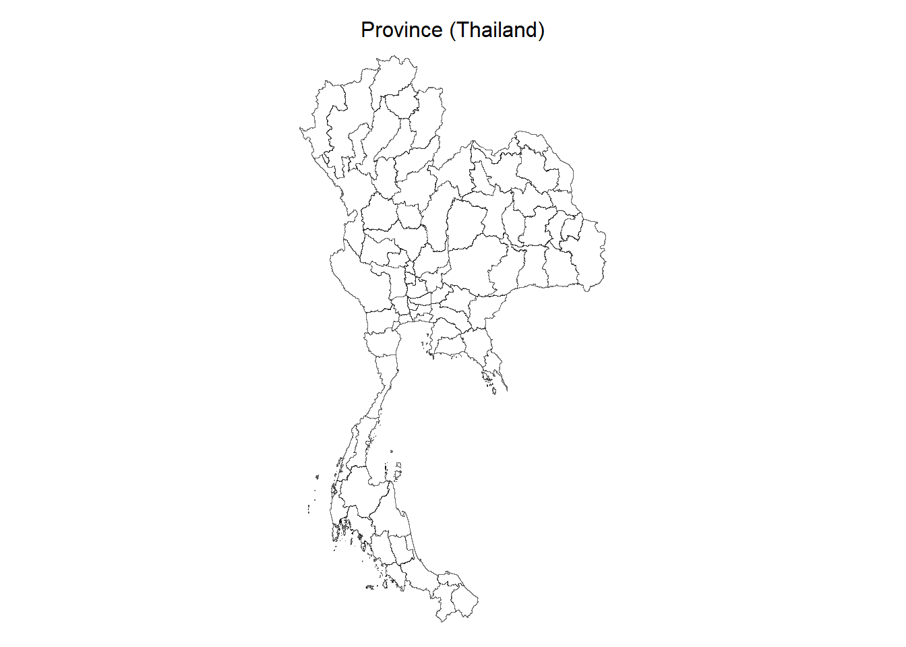
2.2 Importing Aspatial Dataset
I used read_csv() to read the aspatial dataset into R environment.
drug_offenses <- read_csv("data/thai_drug_offenses_2017_2022.csv")Rows: 7392 Columns: 5
── Column specification ────────────────────────────────────────────────────────
Delimiter: ","
chr (3): types_of_drug_offenses, province_th, province_en
dbl (2): fiscal_year, no_cases
ℹ Use `spec()` to retrieve the full column specification for this data.
ℹ Specify the column types or set `show_col_types = FALSE` to quiet this message.summary(drug_offenses) fiscal_year types_of_drug_offenses no_cases province_th
Min. :2017 Length:7392 Min. : 0.0 Length:7392
1st Qu.:2018 Class :character 1st Qu.: 1.0 Class :character
Median :2020 Mode :character Median : 70.0 Mode :character
Mean :2020 Mean : 535.3
3rd Qu.:2021 3rd Qu.: 623.0
Max. :2022 Max. :17131.0
province_en
Length:7392
Class :character
Mode :character
3.0 Data Preprocessing
3.1 Join table together
I joined the boundary data and the drug offenses data together using left_join(). Since the column “ADM1_TH” in boundary data matches the “provine_th” column in the drug offenses data, i made use of both of these column to join the tables. Since I will be analysing drug offences in the province level, I select the following columns that will be helpful to my analysis to create my new data: fiscal_year, types_of_drug_offenses, no_cases, geometry.
drug_offences_all <- left_join(boundary_data, drug_offenses, by = c("ADM1_TH" = "province_th")) %>% select(3, 17:19, 21)3.2 Removal of data rows
As the dataset is too big and I do not have enough computational power to analyse the entire dataset, I filtered out rows with the word “suspects” in the types of drug offenses column. I want to narrow my analysis and focus it on actual drug offenses that have already taken place. I then removed the column types_of_drug_offenses and processed the remaining data. I also found out that Phuket does not have any neighbouring province. I decided to remove it since it will not help in our analysis.
df_filtered <- drug_offences_all %>%
filter(!grepl("suspects", types_of_drug_offenses, ignore.case = TRUE))df_filtered <- df_filtered %>%
filter(!grepl("Phuket", ADM1_EN, ignore.case=TRUE))df_filtered <- subset(df_filtered, select = -c(types_of_drug_offenses) )3.3 Summing up number of drug offenses cases
For this study, we are interested in finding out about the drug abuse in each province across the years from 2017 to 2022. Since the dataset is still too huge after performing the data preprocessing as mentioned above, I decided to sum the number of drug abuse up based on the province and the year. I then save this data into a rds file so that I would not have to waste computational power to run the data preprocessing steps again.
drug_offences_final <- df_filtered %>%
group_by(ADM1_EN, fiscal_year) %>%
summarise(total_cases = sum(no_cases, na.rm = TRUE),
geometry = first(geometry), .groups = 'drop')write_rds(drug_offences_final, "rds/drug_offences.rds")
for (year in names(yearly_data)) {
file_name <- paste0("rds/drug_offense_year_", year, ".rds") # Create the file name
saveRDS(yearly_data[[year]], file = file_name) # Save the data frame as an RDS file
}drug_offences_final <- read_rds("rds/drug_offences.rds")Besides saving the whole data, I also broke them down by year and save each year data into a rds file.
years <- unique(drug_offences_final$fiscal_year)
# Create a list to store the data frames for each year
yearly_data <- list()
# Loop through each year and create a separate object for each
for (year in years) {
yearly_data[[as.character(year)]] <- drug_offences_final %>%
filter(fiscal_year == year)
}4.0 Global Measures of Spatial Autocorrelation
4.1 Computing Contiguity Spatial Weights
Before computing the global spatial autocorrelation statistics, I will construct the spatial weights of the study area. This is used to define the neighbourhood relationships between the province in Thailand. I will make use of st_contiguity() to compute contiguity weight matrices for the study area. This function builds a neighbours list based on province with contiguous boundaries. For this study, I will use queen criteria to calculate the neighbour list. I loop through each year data and constructed the spatial weights for each year which I then added them into a list called nb_list.
nb_list <- list()
# Loop through each year in the yearly_data list
for (year in names(yearly_data)) {
# Get the data for the current year
data_for_year <- yearly_data[[year]]
nb_list[[year]] <- st_contiguity(data_for_year, queen = TRUE)
print(summary(nb_list[[year]]))
}Neighbour list object:
Number of regions: 76
Number of nonzero links: 352
Percentage nonzero weights: 6.094183
Average number of links: 4.631579
Link number distribution:
1 2 3 4 5 6 7 8 9
1 5 17 15 17 10 5 4 2
1 least connected region:
70 with 1 link
2 most connected regions:
17 68 with 9 links
Neighbour list object:
Number of regions: 76
Number of nonzero links: 352
Percentage nonzero weights: 6.094183
Average number of links: 4.631579
Link number distribution:
1 2 3 4 5 6 7 8 9
1 5 17 15 17 10 5 4 2
1 least connected region:
70 with 1 link
2 most connected regions:
17 68 with 9 links
Neighbour list object:
Number of regions: 76
Number of nonzero links: 352
Percentage nonzero weights: 6.094183
Average number of links: 4.631579
Link number distribution:
1 2 3 4 5 6 7 8 9
1 5 17 15 17 10 5 4 2
1 least connected region:
70 with 1 link
2 most connected regions:
17 68 with 9 links
Neighbour list object:
Number of regions: 76
Number of nonzero links: 352
Percentage nonzero weights: 6.094183
Average number of links: 4.631579
Link number distribution:
1 2 3 4 5 6 7 8 9
1 5 17 15 17 10 5 4 2
1 least connected region:
70 with 1 link
2 most connected regions:
17 68 with 9 links
Neighbour list object:
Number of regions: 76
Number of nonzero links: 352
Percentage nonzero weights: 6.094183
Average number of links: 4.631579
Link number distribution:
1 2 3 4 5 6 7 8 9
1 5 17 15 17 10 5 4 2
1 least connected region:
70 with 1 link
2 most connected regions:
17 68 with 9 links
Neighbour list object:
Number of regions: 76
Number of nonzero links: 352
Percentage nonzero weights: 6.094183
Average number of links: 4.631579
Link number distribution:
1 2 3 4 5 6 7 8 9
1 5 17 15 17 10 5 4 2
1 least connected region:
70 with 1 link
2 most connected regions:
17 68 with 9 links4.2 Row standardized weights matrix
Next, I assign the spatial weights to each neighbouring polygon. I will use the st_weights() function to supplement a neighbour list with spatial weights based on the selected coding scheme. I made use of W which represents row standardised weight matrix. This makes sure that the total value for each row sums up to 1. Row standardisation weight matrix makes sure that the weights are between 0 and 1. This helps in the interpretation of operation with weight matrix as an averaging of neighbouring values which allow for the spatial parameter to be comparable between models. Similarly to above, since there are multiple years, I loop through each year data and assign the spatial weights to each neighbouring polygon for each year.
rswm_q_list <- list()
wm_rs_list <- list()
for (year in names(yearly_data)) {
data_for_year <- yearly_data[[year]]
wm_rs <- st_weights(nb_list[[year]], style = "W")
rswm_q_list[[year]] <- data_for_year %>% mutate(nb=nb_list[[year]], wt=wm_rs, .before=1)
}5.0 Global Measures of Spatial Autocorrelation: Moran’s I
5.1 Global Moran’s I test
The primary goal of this test is to see if the spatial autocorrelation is positive, negative or non-existent. The hypothesis of this test are: - H0: There is no spatial autocorrelation or negative spatial autocorrelation - H1: There is the presence of positive spatial autocorrelation
In this test, I broke it down into each year to see if there are spatial autocorrelation for each year data.
for (year in names(yearly_data)) {
data_for_year <- yearly_data[[year]]
result <- global_moran_test(rswm_q_list[[year]]$total_cases, rswm_q_list[[year]]$nb, rswm_q_list[[year]]$wt, alternative="greater")
print(year)
print(result)
}[1] "2017"
Moran I test under randomisation
data: x
weights: listw
Moran I statistic standard deviate = 2.5561, p-value = 0.005293
alternative hypothesis: greater
sample estimates:
Moran I statistic Expectation Variance
0.137714982 -0.013333333 0.003492098
[1] "2018"
Moran I test under randomisation
data: x
weights: listw
Moran I statistic standard deviate = 2.2233, p-value = 0.0131
alternative hypothesis: greater
sample estimates:
Moran I statistic Expectation Variance
0.120866215 -0.013333333 0.003643392
[1] "2019"
Moran I test under randomisation
data: x
weights: listw
Moran I statistic standard deviate = 2.5576, p-value = 0.00527
alternative hypothesis: greater
sample estimates:
Moran I statistic Expectation Variance
0.16068782 -0.01333333 0.00462963
[1] "2020"
Moran I test under randomisation
data: x
weights: listw
Moran I statistic standard deviate = 1.9667, p-value = 0.02461
alternative hypothesis: greater
sample estimates:
Moran I statistic Expectation Variance
0.127430656 -0.013333333 0.005123019
[1] "2021"
Moran I test under randomisation
data: x
weights: listw
Moran I statistic standard deviate = 2.8053, p-value = 0.002513
alternative hypothesis: greater
sample estimates:
Moran I statistic Expectation Variance
0.198171831 -0.013333333 0.005684265
[1] "2022"
Moran I test under randomisation
data: x
weights: listw
Moran I statistic standard deviate = 2.8098, p-value = 0.002479
alternative hypothesis: greater
sample estimates:
Moran I statistic Expectation Variance
0.202009605 -0.013333333 0.005873823 As seen from the results, across all the years, the Moran’s I statistics is significantly higher and different from the expectation under the null hypothesis. This means that there is significant spatial autocorrelation in the data across the years. All the p-value for all years are below 0.05 which indicates that the spatial pattern is unlikely to be a result of random chance. In this case, we will reject the null hypothesis of no spatial autocorrelation.
In conclusion, the test results suggests that there is positive spatial autocorrelation in our study area. This means that provinces with similar number of drug abuse are more likely to be located near each other.
5.2 Global Moran’s I Permutation test
I then ran global_moran_perm() with nsim=999 which represent 1000 Monte Carlo simulations to be carried out.
gmoran_MC_list <- list()
set.seed(1234)
for (year in names(yearly_data)) {
# Get the data for the current year
data_for_year <- yearly_data[[year]]
gmoran_MC_list[[year]] <- global_moran_perm(rswm_q_list[[year]]$total_cases, rswm_q_list[[year]]$nb, rswm_q_list[[year]]$wt, nsim=999)
print(year)
print(gmoran_MC_list[[year]])
}[1] "2017"
Monte-Carlo simulation of Moran I
data: x
weights: listw
number of simulations + 1: 1000
statistic = 0.13771, observed rank = 979, p-value = 0.042
alternative hypothesis: two.sided
[1] "2018"
Monte-Carlo simulation of Moran I
data: x
weights: listw
number of simulations + 1: 1000
statistic = 0.12087, observed rank = 967, p-value = 0.066
alternative hypothesis: two.sided
[1] "2019"
Monte-Carlo simulation of Moran I
data: x
weights: listw
number of simulations + 1: 1000
statistic = 0.16069, observed rank = 986, p-value = 0.028
alternative hypothesis: two.sided
[1] "2020"
Monte-Carlo simulation of Moran I
data: x
weights: listw
number of simulations + 1: 1000
statistic = 0.12743, observed rank = 964, p-value = 0.072
alternative hypothesis: two.sided
[1] "2021"
Monte-Carlo simulation of Moran I
data: x
weights: listw
number of simulations + 1: 1000
statistic = 0.19817, observed rank = 994, p-value = 0.012
alternative hypothesis: two.sided
[1] "2022"
Monte-Carlo simulation of Moran I
data: x
weights: listw
number of simulations + 1: 1000
statistic = 0.20201, observed rank = 995, p-value = 0.01
alternative hypothesis: two.sidedFrom the output above, we can see that across all years, the results are almost identical to our results above using global_moran_test(). This means that our results is stable and is statistically significant.
5.3 Visualising Monte Carlo Moran’s I
I then plot 6 histograms, 1 for each year to look at the permutation results and compare them to the expected value under the null hypothesis.
for (year in names(yearly_data)) {
# Get the data for the current year
data_for_year <- yearly_data[[year]]
xlab_title <- paste("Simulated Moran's I", year)
hist(gmoran_MC_list[[year]]$res, main="Histogram of Monte Carlo Moran's I Simulation Results", xlab=xlab_title, ylab = "Frequency")
abline(v=gmoran_MC_list[[year]]$statistic, col="red")
}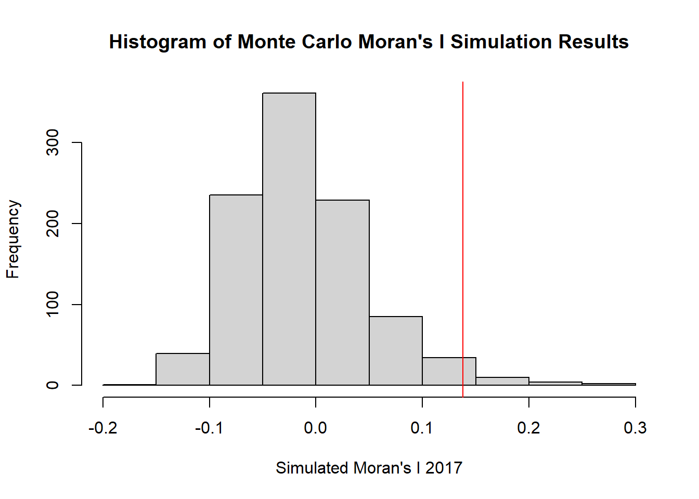
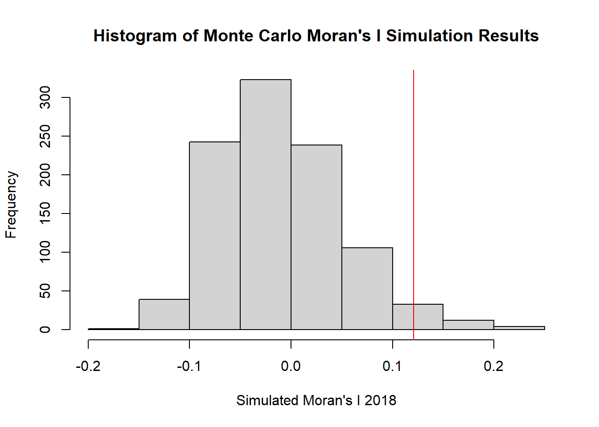
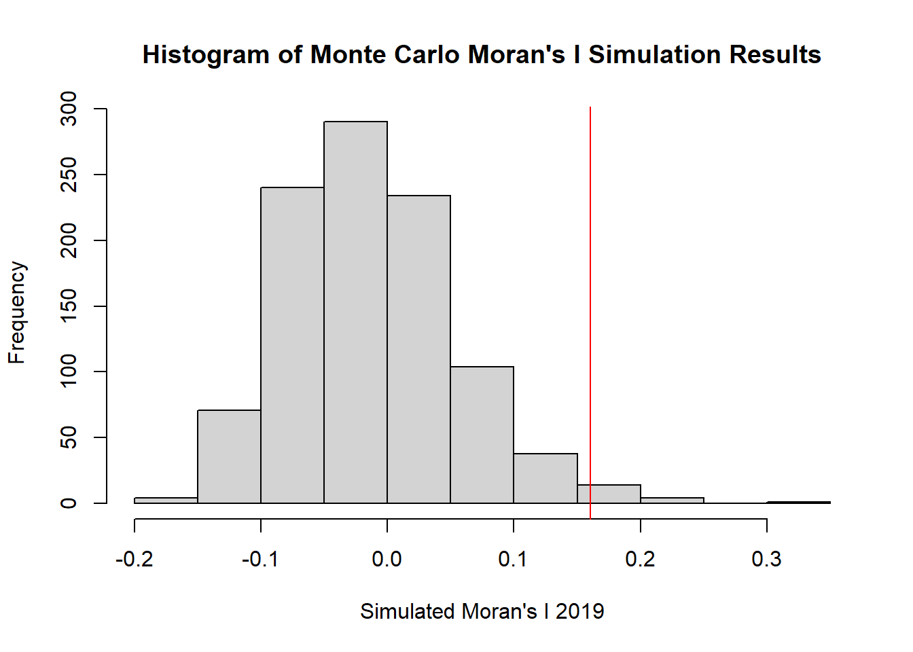
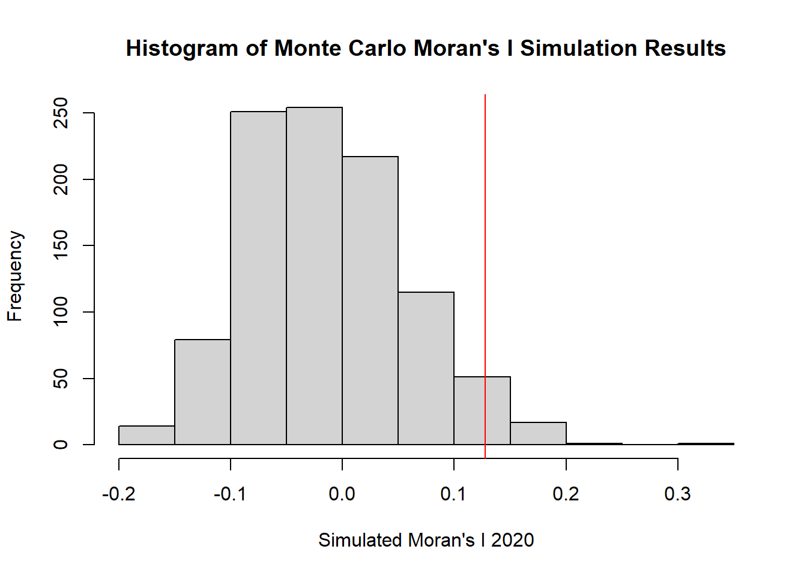
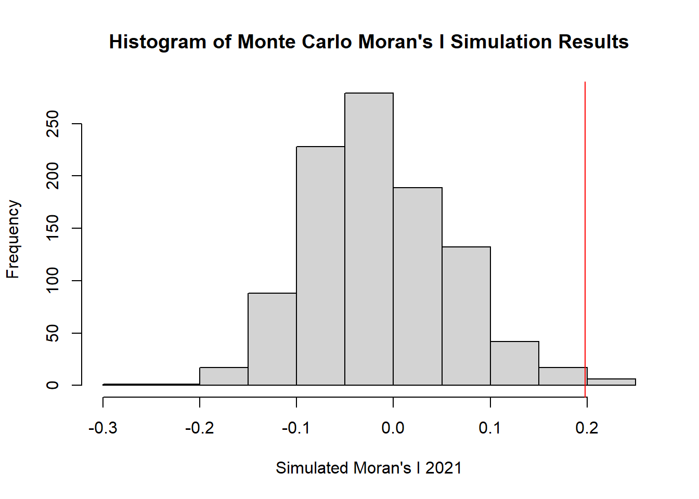
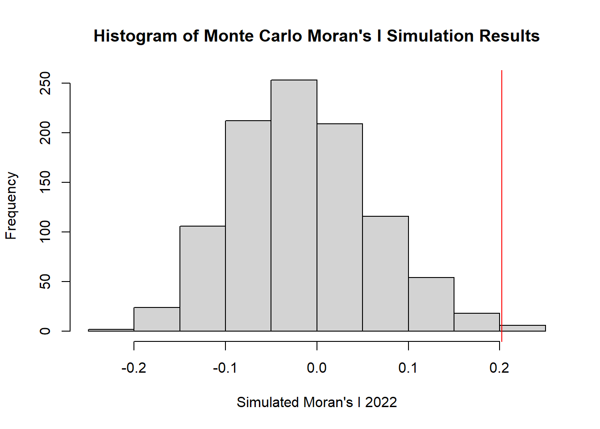
6.0 Global Measures of Spatial Autocorrelation: Geary’s C
6.1 Geary’s C test
I decided to use Geary’s C test. Through Geary’s c statistics, it tells us the degree of intensity of a given feature in spatial objects described with the use of a weight matrix. From the results, we can tell the spatial autocorrelation in the data. Similar to above, I ran the results for each year.
for (year in names(yearly_data)) {
data_for_year <- yearly_data[[year]]
result <- global_c_test(rswm_q_list[[year]]$total_cases, rswm_q_list[[year]]$nb, rswm_q_list[[year]]$wt, alternative="greater")
print(year)
print(result)
}[1] "2017"
Geary C test under randomisation
data: x
weights: listw
Geary C statistic standard deviate = 0.015121, p-value = 0.494
alternative hypothesis: Expectation greater than statistic
sample estimates:
Geary C statistic Expectation Variance
0.99787741 1.00000000 0.01970579
[1] "2018"
Geary C test under randomisation
data: x
weights: listw
Geary C statistic standard deviate = -0.0093488, p-value = 0.5037
alternative hypothesis: Expectation greater than statistic
sample estimates:
Geary C statistic Expectation Variance
1.0012850 1.0000000 0.0188926
[1] "2019"
Geary C test under randomisation
data: x
weights: listw
Geary C statistic standard deviate = 0.62426, p-value = 0.2662
alternative hypothesis: Expectation greater than statistic
sample estimates:
Geary C statistic Expectation Variance
0.92722197 1.00000000 0.01359168
[1] "2020"
Geary C test under randomisation
data: x
weights: listw
Geary C statistic standard deviate = 0.40929, p-value = 0.3412
alternative hypothesis: Expectation greater than statistic
sample estimates:
Geary C statistic Expectation Variance
0.95719077 1.00000000 0.01093976
[1] "2021"
Geary C test under randomisation
data: x
weights: listw
Geary C statistic standard deviate = 1.4737, p-value = 0.07028
alternative hypothesis: Expectation greater than statistic
sample estimates:
Geary C statistic Expectation Variance
0.868819188 1.000000000 0.007923123
[1] "2022"
Geary C test under randomisation
data: x
weights: listw
Geary C statistic standard deviate = 1.7472, p-value = 0.0403
alternative hypothesis: Expectation greater than statistic
sample estimates:
Geary C statistic Expectation Variance
0.854819088 1.000000000 0.006904269 As seen from the results above, year 2017, 2019-2022 all have a Geary C statistics that is below the null hypothesis of 1. This suggests the presence of spatial autocorrelation in the data. In year 2018, we realised that the Geary C statistics is above the null hypothesis of 1. This means that there is either no spatial autocorrelation or there is negative spatial autocorrelation.
However, when we look closer to the p-value, we realised that across the years 2017-2021, all the p-value are more than 0.05. This indicates that the spatial pattern observed is likely to be the result of random chance. Therefore we accept the null hypothesis of no or negative spatial correlation for the years 2017-2021.
For 2022, the p-value is less than 0.05 which indicates that there is spatial pattern. Therefore, we reject the null hypothesis of no spatial correlation.
In conclusion, the test results for 2017-2021 suggest that there is no or negative spatial autocorrelation in the study area. This means that the drug abuse could be randomly distributed or that the neighbouring province have dissimilar values of total cases of drug abuse. One possible reason that Geary’s C results differ from Moran’s I is that there could be outliers and local variations which Geary’s C is more sensitive towards and hence, showing us a different result and conclusion from Moran’s I.
6.2 Computing Geary’s C Permutation Test
globalGC_list <- list()
set.seed(1234)
for (year in names(yearly_data)) {
data_for_year <- yearly_data[[year]]
globalGC_list[[year]]=global_c_perm(rswm_q_list[[year]]$total_cases, rswm_q_list[[year]]$nb, rswm_q_list[[year]]$wt, nsim=999)
print(year)
print(globalGC_list[[year]])
}[1] "2017"
Monte-Carlo simulation of Geary C
data: x
weights: listw
number of simulations + 1: 1000
statistic = 0.99788, observed rank = 527, p-value = 0.527
alternative hypothesis: greater
[1] "2018"
Monte-Carlo simulation of Geary C
data: x
weights: listw
number of simulations + 1: 1000
statistic = 1.0013, observed rank = 530, p-value = 0.53
alternative hypothesis: greater
[1] "2019"
Monte-Carlo simulation of Geary C
data: x
weights: listw
number of simulations + 1: 1000
statistic = 0.92722, observed rank = 271, p-value = 0.271
alternative hypothesis: greater
[1] "2020"
Monte-Carlo simulation of Geary C
data: x
weights: listw
number of simulations + 1: 1000
statistic = 0.95719, observed rank = 349, p-value = 0.349
alternative hypothesis: greater
[1] "2021"
Monte-Carlo simulation of Geary C
data: x
weights: listw
number of simulations + 1: 1000
statistic = 0.86882, observed rank = 60, p-value = 0.06
alternative hypothesis: greater
[1] "2022"
Monte-Carlo simulation of Geary C
data: x
weights: listw
number of simulations + 1: 1000
statistic = 0.85482, observed rank = 49, p-value = 0.049
alternative hypothesis: greaterFrom the results above, we can observe that the statistics value is quite similar to those of Geary’s C test. Therefore, we can confirm that the result is stable and statistically significant.
6.3 Visualising the Monte Carlo Geary’s C
I plot 6 histograms, one for each year to look at the permutation results and compare them to the expected value under null hypothesis.
for (year in names(yearly_data)) {
data_for_year <- yearly_data[[year]]
xlab_title <- paste("Simulated Geary C", year)
hist(globalGC_list[[year]]$res, main="Histogram of Global Geary's C Monte-Carlo Simulation Results", xlab = xlab_title, ylab="Frequency")
abline(v=globalGC_list[[year]]$statistic, col="red")
}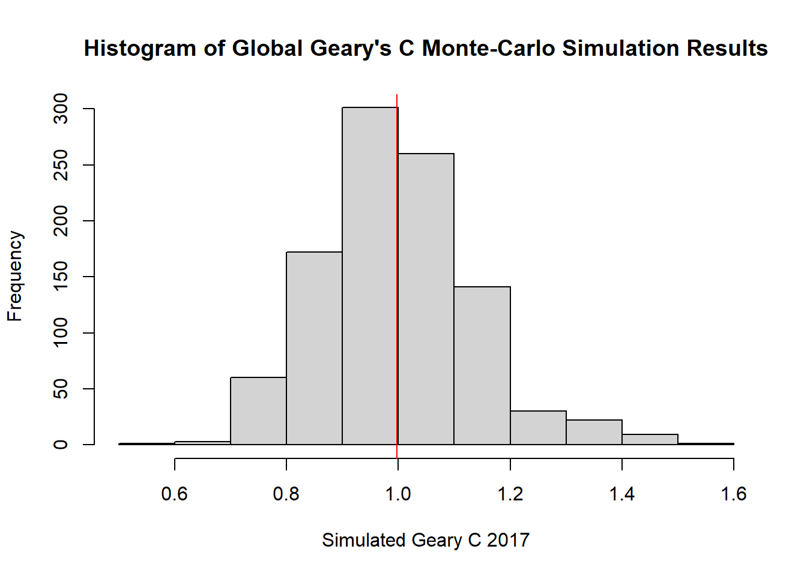
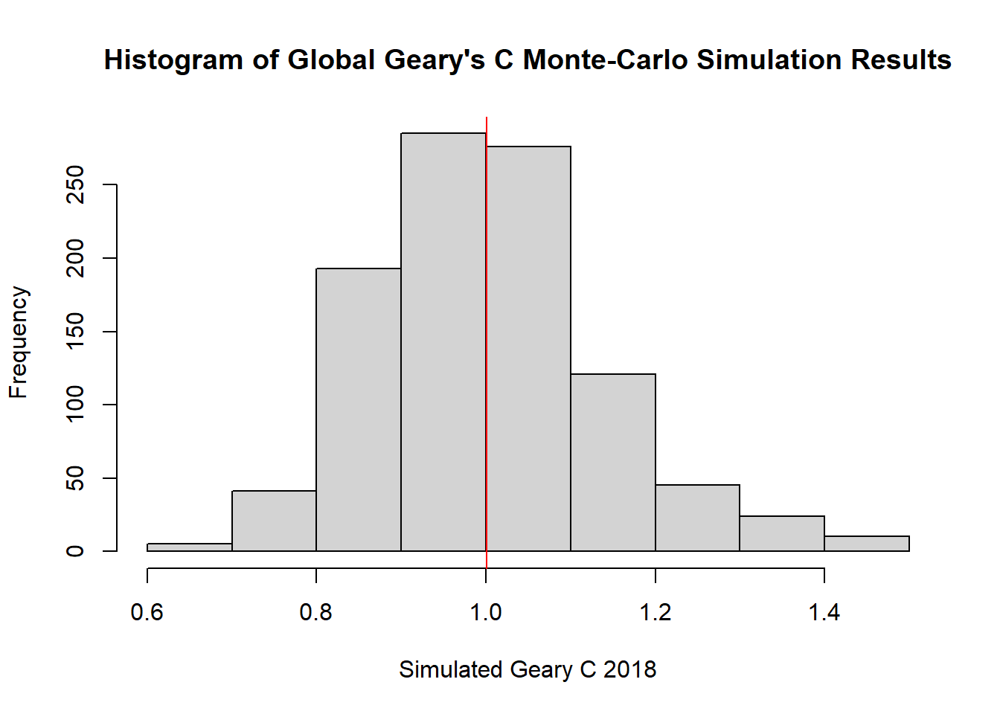
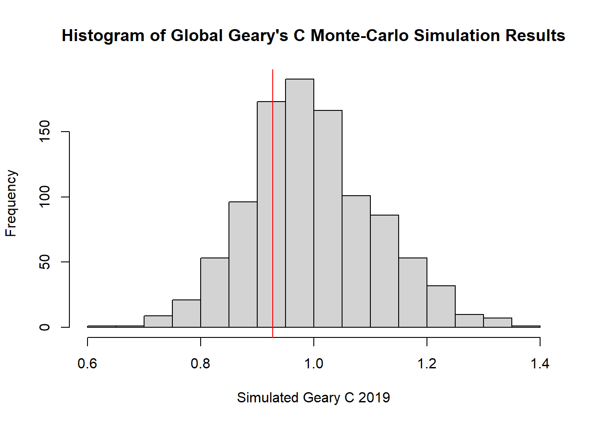
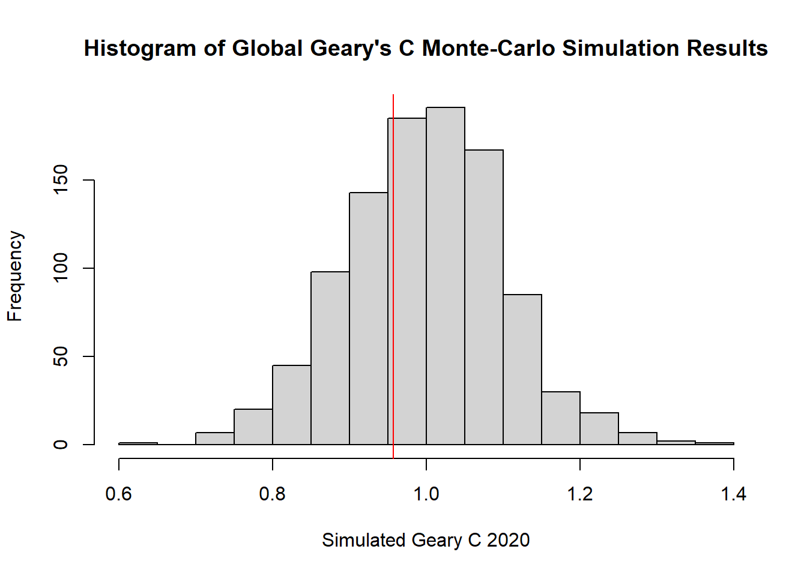
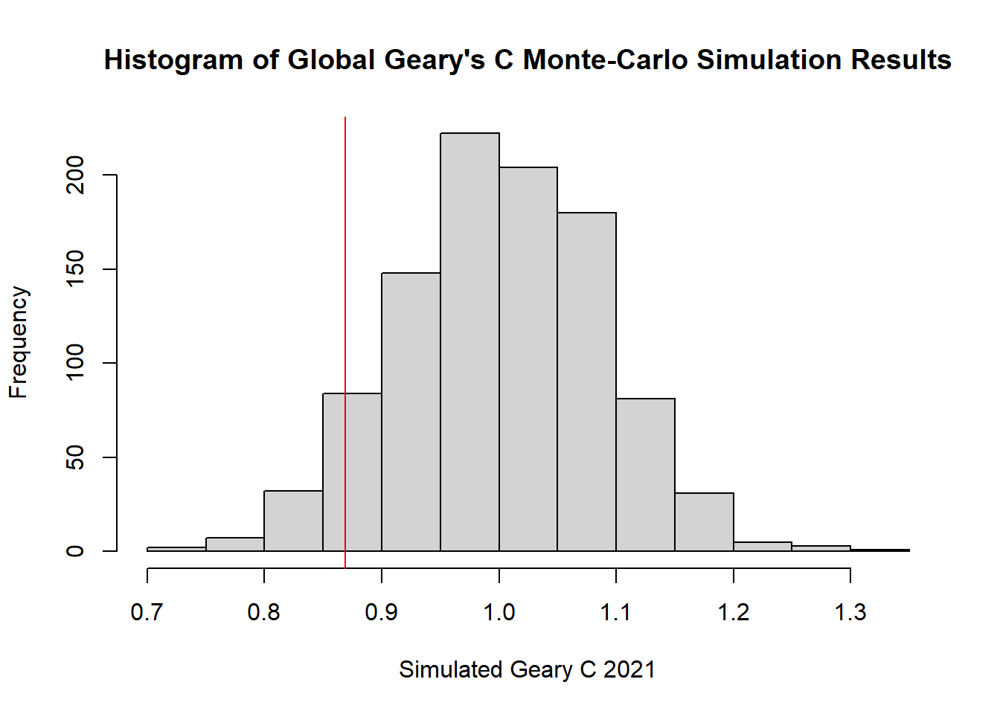
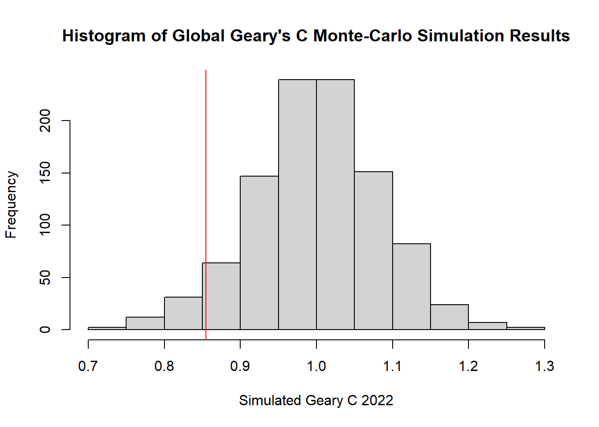
7.0 Local Measures of Spatial Autocorrelation
To calculate Local Moran’s I, the local_moran() function will be used.
lisa_list <- list()
local_moran_list <- list()
for (year in names(yearly_data)) {
data_for_year <- yearly_data[[year]]
lisa_list[[year]] <- rswm_q_list[[year]] %>% mutate(local_moran=local_moran(total_cases, nb, wt, nsim=99),.before=1) %>%
unnest(local_moran)
local_moran_list[[year]] <- local_moran(rswm_q_list[[year]]$total_cases, rswm_q_list[[year]]$nb, rswm_q_list[[year]]$wt)
yearly_data[[year]] <- cbind(data_for_year, local_moran_list[[year]])
print(year)
print(local_moran_list[[year]])
}[1] "2017"
ii eii var_ii z_ii p_ii p_ii_sim
1 -0.0302267205 9.437288e-03 1.522994e-02 -0.32140123 7.479064e-01 0.452
2 0.1978372401 1.537167e-03 1.265505e-01 0.55180865 5.810795e-01 0.616
3 1.1318111048 -6.926747e-01 2.643447e+00 1.12216112 2.617939e-01 0.320
4 0.1081167482 1.216021e-03 3.825649e-02 0.54654775 5.846895e-01 0.576
5 -0.0013471861 -2.322413e-03 1.279600e-02 0.00862122 9.931213e-01 0.760
6 0.3469148258 -8.205312e-03 1.293235e-02 3.12274526 1.791727e-03 0.032
7 0.3532687833 -7.719967e-03 1.429421e-01 0.95480269 3.396775e-01 0.100
8 -0.0066006950 1.757385e-03 7.388624e-04 -0.30748557 7.584738e-01 0.500
9 -0.1315026115 -6.643826e-03 3.042884e-02 -0.71577476 4.741304e-01 0.280
10 -0.3919142186 -5.983694e-02 2.135060e-01 -0.71867769 4.723395e-01 0.400
11 0.0315353223 -1.305446e-02 1.167984e-02 0.41258836 6.799082e-01 0.476
12 0.4047479504 -1.275394e-03 7.260111e-01 0.47651806 6.337053e-01 0.360
13 0.0571472865 1.462317e-03 7.641643e-03 0.63700759 5.241199e-01 0.296
14 0.0363421342 -3.669251e-03 6.969257e-03 0.47928115 6.317386e-01 0.724
15 0.2942695273 -6.210396e-03 5.341832e-02 1.30008075 1.935733e-01 0.016
16 -0.0121438671 -3.766104e-05 6.897191e-04 -0.46096922 6.448207e-01 0.736
17 -0.1188627731 -6.894795e-03 2.621608e-02 -0.69152825 4.892336e-01 0.480
18 0.0744621493 -3.689053e-03 1.603799e-03 1.95146439 5.100183e-02 0.088
19 0.0312007523 3.187563e-04 6.717724e-03 0.37678559 7.063329e-01 0.888
20 -0.0578085514 3.143393e-02 3.939940e-02 -0.44960055 6.529985e-01 0.428
21 0.0911391796 -1.269429e-02 2.407724e-02 0.66916627 5.033894e-01 0.496
22 0.0394791733 1.062523e-03 2.159232e-03 0.82674162 4.083835e-01 0.296
23 -0.2466045312 1.943263e-02 3.224014e-01 -0.46853698 6.394006e-01 0.352
24 0.0417083790 1.976442e-03 3.405998e-02 0.21528687 8.295437e-01 0.956
25 0.1110889233 -2.267976e-03 2.559891e-02 0.70849575 4.786374e-01 0.384
26 -0.0286758972 -1.364946e-03 1.997082e-02 -0.19325864 8.467564e-01 0.624
27 0.1243414024 2.176932e-03 2.793019e-03 2.31157506 2.080111e-02 0.084
28 0.1238708895 -4.359612e-03 3.302931e-02 0.70557240 4.804541e-01 0.364
29 -0.0473149781 -5.386650e-03 2.489359e-02 -0.26574417 7.904362e-01 0.968
30 0.1992824751 4.276175e-03 1.790570e-02 1.45731369 1.450298e-01 0.008
31 1.3242702106 -7.929024e-02 5.280560e-01 1.93148403 5.342322e-02 0.108
32 0.2535046105 1.655307e-02 7.964299e-02 0.83962576 4.011182e-01 0.180
33 0.0003467178 1.151589e-04 2.378775e-04 0.01501360 9.880213e-01 0.604
34 -0.0035059169 -3.800235e-02 2.428603e-01 0.06999967 9.441939e-01 0.764
35 0.0599507378 -8.625041e-05 9.001303e-03 0.63279961 5.268645e-01 0.488
36 0.1058206963 2.103963e-03 1.091551e-03 3.13925693 1.693769e-03 0.036
37 0.0888311860 2.028158e-03 1.201982e-03 2.50372120 1.228948e-02 0.096
38 0.0014886725 6.964691e-05 2.721085e-06 0.86023908 3.896573e-01 0.188
39 -0.2037774137 7.322177e-03 4.398783e-02 -1.00651699 3.141669e-01 0.164
40 -0.2271263000 3.626321e-03 1.475728e-02 -1.89951851 5.749634e-02 0.104
41 0.0997702735 1.307011e-03 5.254283e-02 0.42955372 6.675203e-01 0.720
42 0.0805576578 2.052261e-03 1.838646e-02 0.57896257 5.626144e-01 0.544
43 0.1135312659 1.565143e-02 5.052917e-02 0.43543384 6.632476e-01 0.756
44 0.2983329420 8.432773e-03 1.121935e-01 0.86549516 3.867671e-01 0.108
45 0.3033938933 -1.503405e-02 6.430760e-02 1.25568302 2.092309e-01 0.016
46 0.0190359533 5.680537e-04 2.157781e-03 0.39757021 6.909470e-01 0.832
47 0.1513903650 5.639374e-03 1.588533e-02 1.15641432 2.475117e-01 0.060
48 -0.0030227099 1.063469e-03 6.971697e-04 -0.15475622 8.770135e-01 0.604
49 0.0544088203 -1.812393e-02 9.196138e-02 0.23918361 8.109632e-01 0.916
50 -0.2508321939 -1.551570e-02 6.664470e-02 -0.91152703 3.620177e-01 0.192
51 -0.0861253885 -1.123815e-02 1.483488e-02 -0.61484513 5.386570e-01 0.568
52 0.4636991289 -1.302228e-02 4.174427e-01 0.73784688 4.606075e-01 0.244
53 0.0639019256 -2.077791e-03 1.567233e-02 0.52704015 5.981657e-01 0.616
54 -0.0028012595 1.079733e-03 7.688127e-03 -0.04426215 9.646954e-01 0.736
55 0.1081602052 1.151662e-02 2.532878e-02 0.60724775 5.436865e-01 0.540
56 2.7988150207 1.784830e-02 3.807247e-01 4.50702818 6.574190e-06 0.012
57 -0.6694186766 6.474547e-03 4.429313e-02 -3.21151448 1.320373e-03 0.060
58 0.1253106837 -1.543728e-02 1.961158e-01 0.31782339 7.506189e-01 0.916
59 0.0062815855 8.366032e-03 2.086329e-02 -0.01443110 9.884860e-01 0.764
60 -0.0398134360 -4.722837e-04 2.196036e-03 -0.83951285 4.011816e-01 0.216
61 0.0081428118 5.372304e-04 7.664688e-03 0.08687307 9.307724e-01 0.736
62 0.2950586533 -1.269896e-02 9.323466e-02 1.00790621 3.134995e-01 0.116
63 0.5355589512 -2.143413e-02 5.980048e-01 0.72027356 4.713566e-01 0.264
64 0.3140016736 1.784101e-03 7.985813e-02 1.10483589 2.692307e-01 0.028
65 0.0519869073 6.305669e-04 1.987266e-03 1.15203616 2.493062e-01 0.116
66 0.4985365138 9.508245e-03 8.321689e-01 0.53607828 5.919044e-01 0.340
67 0.0588182191 -8.095083e-03 2.627913e-02 0.41276890 6.797759e-01 0.804
68 0.1484118258 -3.216343e-04 2.809943e-02 0.88727851 3.749290e-01 0.248
69 0.0234973720 -1.196769e-03 7.563309e-04 0.89792074 3.692278e-01 0.192
70 0.2781088375 4.466172e-02 2.343746e-01 0.48220665 6.296592e-01 0.572
71 -0.1194090398 -5.036231e-02 2.969296e-01 -0.12671161 8.991687e-01 0.824
72 0.0309184090 -1.325285e-03 2.840152e-03 0.60502600 5.451617e-01 0.608
73 0.2521441837 2.231338e-03 1.002938e-01 0.78913537 4.300329e-01 0.308
74 0.3334246938 -1.612380e-02 1.090504e-01 1.05850696 2.898244e-01 0.040
75 0.0168615264 -3.699954e-04 2.294695e-04 1.13752561 2.553186e-01 0.160
76 -0.0196643683 9.103349e-03 1.350476e-02 -0.24754949 8.044830e-01 0.584
p_folded_sim skewness kurtosis mean median pysal
1 0.226 -2.9176222 10.2840963 Low-High High-High Low-High
2 0.308 -2.4964678 7.9686163 Low-Low Low-Low Low-Low
3 0.160 0.4003424 -0.4207773 High-High High-High High-High
4 0.288 -2.7232923 9.3343740 Low-Low Low-Low Low-Low
5 0.380 -1.8802448 3.7651488 Low-Low Low-High Low-High
6 0.016 1.4413226 2.1319591 High-High High-High High-High
7 0.050 -2.4524264 8.4767621 Low-Low Low-Low Low-Low
8 0.250 -2.3353269 6.9296472 Low-High High-High Low-High
9 0.140 -1.8206748 3.4835795 Low-High Low-High Low-High
10 0.200 2.0946821 5.2829699 High-Low High-Low High-Low
11 0.238 2.8030866 11.6404454 High-High High-High High-High
12 0.180 2.5676090 7.2823269 High-High High-High High-High
13 0.148 2.9671538 12.6863024 High-High High-High High-High
14 0.362 -1.6512718 2.6568684 Low-Low High-Low Low-Low
15 0.008 -1.7532857 3.0303823 Low-Low Low-Low Low-Low
16 0.368 1.9625676 4.4526688 High-Low High-Low High-Low
17 0.240 1.2951708 1.5161678 High-Low High-Low High-Low
18 0.044 2.7011471 10.9250805 High-High High-High High-High
19 0.444 -1.8475733 4.0989122 Low-Low High-Low Low-Low
20 0.214 -2.6057743 9.6867003 Low-High Low-High Low-High
21 0.248 -1.5096895 2.3802529 Low-Low Low-Low Low-Low
22 0.148 -1.5141356 2.3071912 Low-Low High-Low Low-Low
23 0.176 -3.3453866 13.6932033 Low-High Low-High Low-High
24 0.478 -2.3735907 7.4228596 Low-Low Low-High Low-Low
25 0.192 -1.9374214 4.4934644 Low-Low Low-Low Low-Low
26 0.312 -1.7929118 3.8291715 Low-Low Low-High Low-High
27 0.042 1.7973850 3.8443525 High-High High-High High-High
28 0.182 -2.6074952 8.7713534 Low-Low Low-Low Low-Low
29 0.484 1.9890593 4.6045397 High-Low High-High High-Low
30 0.004 -1.5645576 2.6832498 Low-Low Low-Low Low-Low
31 0.054 2.2627086 7.2137365 High-High High-High High-High
32 0.090 -2.7348543 9.3972601 Low-Low Low-Low Low-Low
33 0.302 3.1870572 12.7780196 High-Low High-High High-High
34 0.382 -2.2848329 5.7909099 Low-Low Low-High Low-High
35 0.244 -2.0402870 4.5471709 Low-Low High-Low Low-Low
36 0.018 1.9935412 4.1178141 High-High High-High High-High
37 0.048 1.6345945 2.5061097 High-High High-High High-High
38 0.094 2.5394134 6.8377883 High-High High-High High-High
39 0.082 -2.7137288 8.9951971 Low-High Low-High Low-High
40 0.052 -2.2707849 6.1925892 Low-High High-High Low-High
41 0.360 -2.6914251 11.2851731 Low-Low Low-Low Low-Low
42 0.272 -2.2015961 6.8325764 Low-Low Low-Low Low-Low
43 0.378 -2.4901299 9.0587122 Low-Low Low-Low Low-Low
44 0.054 -2.8676212 11.5580568 Low-Low Low-Low Low-Low
45 0.008 -2.6077025 10.6634519 Low-Low Low-Low Low-Low
46 0.416 -1.7531849 3.6939451 Low-Low High-Low Low-Low
47 0.030 -2.0987141 5.1342049 Low-Low Low-Low Low-Low
48 0.302 -2.7856876 11.0840378 Low-Low High-High Low-High
49 0.458 -3.6120712 17.3565221 Low-Low Low-Low Low-Low
50 0.096 -2.6794595 9.1971643 Low-High Low-High Low-High
51 0.284 1.7612783 3.4640460 High-Low High-Low High-Low
52 0.122 3.3858562 13.8135645 High-High High-High High-High
53 0.308 -2.4322277 7.8601425 Low-Low Low-Low Low-Low
54 0.368 -1.9899364 5.0100483 Low-Low High-High Low-High
55 0.270 -1.9883160 5.3694899 Low-Low Low-Low Low-Low
56 0.006 3.1174677 10.6011358 High-High High-High High-High
57 0.030 -2.3322809 5.8514423 Low-High Low-High Low-High
58 0.458 -2.8351342 10.7328553 Low-Low Low-Low Low-Low
59 0.382 -2.0820565 5.2509811 Low-Low Low-High Low-Low
60 0.108 -2.8172943 9.5746477 Low-High High-High Low-High
61 0.368 1.9252219 4.6403448 High-Low High-High High-High
62 0.058 -1.8298674 3.6570548 Low-Low Low-Low Low-Low
63 0.132 2.2799448 6.9722044 High-High High-High High-High
64 0.014 -2.1936834 6.1608910 Low-Low Low-Low Low-Low
65 0.058 -1.4616080 2.3278606 Low-Low High-Low Low-Low
66 0.170 2.1280909 5.3150713 High-High High-High High-High
67 0.402 -2.0899059 4.8562219 Low-Low Low-Low Low-Low
68 0.124 -1.7135237 3.6438459 Low-Low Low-Low Low-Low
69 0.096 2.1565747 5.4770735 High-High High-High High-High
70 0.292 -3.5574023 25.6855252 Low-Low Low-Low Low-Low
71 0.412 2.8751768 11.1406333 High-Low High-Low High-Low
72 0.304 -1.9025311 5.0316243 Low-Low High-Low Low-Low
73 0.154 -2.1216564 5.6627076 Low-Low Low-Low Low-Low
74 0.020 -2.2283214 5.5224320 Low-Low Low-Low Low-Low
75 0.080 2.5830501 9.0496039 High-High High-High High-High
76 0.292 -1.7883778 3.5358923 Low-Low Low-High Low-High
[1] "2018"
ii eii var_ii z_ii p_ii p_ii_sim
1 -0.062072303 1.982615e-02 2.565224e-02 -0.511343846 6.091103e-01 0.476
2 0.145058680 -2.521237e-02 1.203290e-01 0.490857753 6.235271e-01 0.680
3 1.167626972 -6.762782e-01 2.911135e+00 1.080705592 2.798281e-01 0.284
4 0.238798798 3.405598e-04 9.193112e-02 0.786468008 4.315934e-01 0.256
5 -0.002502279 -8.948727e-05 3.786759e-05 -0.392090200 6.949916e-01 0.444
6 -0.002475348 -4.051780e-06 6.405776e-07 -3.087727201 2.016935e-03 0.020
7 0.391366648 4.225396e-03 1.372997e-01 1.044803579 2.961138e-01 0.056
8 0.113447927 2.426595e-03 2.083219e-02 0.769199501 4.417749e-01 0.252
9 -0.099967712 -9.493420e-04 2.523916e-02 -0.623273017 5.331051e-01 0.340
10 -0.382223710 1.829155e-02 2.743663e-01 -0.764634181 4.444894e-01 0.352
11 0.022821164 -4.231120e-04 7.834764e-03 0.262605047 7.928550e-01 0.556
12 0.193830420 -9.511082e-02 8.572466e-01 0.312073321 7.549848e-01 0.532
13 0.006218247 -7.003043e-04 2.615749e-04 0.427776695 6.688137e-01 0.420
14 0.052068280 3.402235e-03 1.133343e-02 0.457135859 6.475734e-01 0.732
15 0.197315388 -6.681967e-03 3.936414e-02 1.028191902 3.038596e-01 0.128
16 -0.014467677 -2.780694e-03 2.285516e-03 -0.244461370 8.068735e-01 0.996
17 -0.069515763 -8.290273e-04 3.611355e-02 -0.361441326 7.177696e-01 0.868
18 -0.041414148 -3.756692e-03 1.229925e-03 -1.073770877 2.829254e-01 0.216
19 0.026208663 1.520396e-03 3.513521e-03 0.416504131 6.770411e-01 0.736
20 -0.076113965 -2.372484e-03 5.391238e-02 -0.317590586 7.507955e-01 0.520
21 0.094306827 -3.821706e-03 3.754919e-02 0.506401534 6.125748e-01 0.688
22 -0.012235597 -1.516561e-03 9.330726e-04 -0.350911830 7.256545e-01 0.860
23 -0.334284637 -3.691794e-03 4.207674e-01 -0.509650471 6.102964e-01 0.368
24 -0.005786682 8.847270e-04 2.553735e-02 -0.041747421 9.667001e-01 0.748
25 0.141456160 2.377799e-03 2.116718e-02 0.955934277 3.391054e-01 0.204
26 -0.066190677 4.932230e-03 3.183142e-02 -0.398640556 6.901581e-01 0.504
27 0.131887663 2.125130e-03 2.682196e-03 2.505555490 1.222592e-02 0.068
28 0.277145622 -1.332979e-02 1.195091e-01 0.840250861 4.007677e-01 0.172
29 -0.042574042 2.979094e-03 1.225576e-01 -0.130121227 8.964705e-01 0.908
30 0.190392103 -2.007811e-03 2.047393e-02 1.344634540 1.787433e-01 0.040
31 0.835900808 -2.470066e-02 5.577276e-01 1.152367488 2.491701e-01 0.172
32 0.278983061 -4.620776e-03 1.208571e-01 0.815785595 4.146228e-01 0.152
33 -0.041650267 2.981723e-02 1.423003e-01 -0.189454822 8.497364e-01 0.840
34 0.020611083 1.639710e-02 2.004791e-01 0.009411485 9.924908e-01 0.724
35 0.120712441 -6.209422e-03 2.140023e-02 0.867615395 3.856049e-01 0.184
36 0.170015454 -8.934521e-04 1.929836e-03 3.890492076 1.000411e-04 0.024
37 0.267484216 1.106944e-02 1.404769e-02 2.163418967 3.050897e-02 0.120
38 -0.021278489 -8.298752e-04 5.002579e-04 -0.914254062 3.605834e-01 0.164
39 -0.150082500 1.649168e-02 6.584555e-02 -0.649149112 5.162420e-01 0.284
40 -0.288558238 -4.523820e-03 4.531684e-02 -1.334262164 1.821180e-01 0.128
41 0.127420668 6.705504e-03 6.152410e-02 0.486675157 6.264886e-01 0.676
42 0.018474768 4.497393e-04 4.188946e-03 0.278498980 7.806293e-01 0.936
43 0.106025083 -2.481669e-02 8.460078e-02 0.449841234 6.528249e-01 0.784
44 0.175579176 -6.687731e-03 6.872724e-02 0.695253791 4.868963e-01 0.432
45 0.193612612 8.982946e-03 2.962058e-02 1.072765309 2.833764e-01 0.076
46 0.002780844 -6.491112e-04 1.544784e-04 0.275965411 7.825746e-01 0.960
47 0.200164175 -1.049129e-02 3.654551e-02 1.101934267 2.704902e-01 0.064
48 -0.009091413 1.032084e-04 8.126418e-03 -0.101996265 9.187596e-01 0.696
49 0.085009270 -6.123182e-03 1.119118e-01 0.272417572 7.853010e-01 0.976
50 -0.168221000 1.773087e-03 8.040208e-02 -0.599515167 5.488294e-01 0.268
51 -0.147690740 -1.263022e-02 4.711604e-02 -0.622220100 5.337972e-01 0.504
52 0.489985184 5.496638e-03 2.683431e-01 0.935272714 3.496478e-01 0.152
53 0.051406937 -3.645937e-03 1.695526e-02 0.422793027 6.724463e-01 0.756
54 -0.032550864 -7.792627e-03 2.901025e-02 -0.145359677 8.844269e-01 0.644
55 0.198464574 -1.350684e-02 5.027358e-02 0.945382115 3.444638e-01 0.196
56 3.523832648 1.229198e-02 6.921057e-01 4.220962581 2.432613e-05 0.028
57 -0.825782499 -1.543694e-02 6.558288e-02 -3.164280869 1.554667e-03 0.064
58 0.119660501 -2.712119e-02 2.035814e-01 0.325314065 7.449434e-01 0.892
59 -0.059259254 8.864604e-03 2.091156e-02 -0.471092261 6.375749e-01 0.404
60 -0.056781022 3.103700e-03 8.329352e-03 -0.656161019 5.117205e-01 0.360
61 0.038237510 9.341943e-04 1.531106e-02 0.301470477 7.630558e-01 0.460
62 0.288623517 1.935113e-03 1.158158e-01 0.842415370 3.995555e-01 0.280
63 0.299674509 -1.681022e-02 5.192352e-01 0.439208467 6.605105e-01 0.376
64 0.262074502 -2.946114e-02 8.153294e-02 1.020998490 3.072552e-01 0.144
65 0.056105324 -1.736948e-03 3.198233e-03 1.022798961 3.064029e-01 0.168
66 0.226366048 -4.686306e-03 5.050365e-01 0.325123997 7.450872e-01 0.424
67 -0.003142752 2.580720e-04 2.241814e-04 -0.227135136 8.203187e-01 0.992
68 0.106435173 5.935942e-04 1.500354e-02 0.864090802 3.875380e-01 0.320
69 -0.045766382 -1.677987e-03 7.756470e-03 -0.500601606 6.166515e-01 0.360
70 0.282221914 -2.096880e-02 6.088980e-01 0.388547052 6.976112e-01 0.804
71 -0.174843733 -2.293701e-02 5.244787e-01 -0.209755374 8.338586e-01 0.912
72 0.075261536 -7.903243e-03 1.363704e-02 0.712162849 4.763639e-01 0.416
73 0.245798306 -1.006498e-02 1.157670e-01 0.751996077 4.520534e-01 0.384
74 0.294279537 -3.985628e-03 8.544435e-02 1.020377471 3.075495e-01 0.068
75 -0.099244909 -2.400520e-03 7.429727e-03 -1.123538716 2.612088e-01 0.160
76 -0.029549961 -2.987930e-03 2.064164e-02 -0.184879671 8.533234e-01 0.600
p_folded_sim skewness kurtosis mean median pysal
1 0.238 -2.3217190 8.66472149 Low-High Low-High Low-High
2 0.340 -1.9838484 4.17149166 Low-Low Low-Low Low-Low
3 0.142 0.6318928 0.04290269 High-High High-High High-High
4 0.128 -2.7942833 11.56293507 Low-Low Low-Low Low-Low
5 0.222 -1.6160650 2.48865083 Low-High High-High Low-High
6 0.010 -1.3821634 1.79515481 Low-High High-High Low-High
7 0.028 -2.2551953 7.14146053 Low-Low Low-Low Low-Low
8 0.126 1.9531433 4.11520285 High-High High-High High-High
9 0.170 -1.9948300 5.51917012 Low-High Low-High Low-High
10 0.176 1.8060366 3.44692590 High-Low High-Low High-Low
11 0.278 3.1048504 14.08320716 High-High High-High High-High
12 0.266 2.8398091 10.70501231 High-High High-High High-High
13 0.210 2.4841221 7.39771353 High-High High-High High-High
14 0.366 -1.7642951 3.82717078 Low-Low High-Low Low-Low
15 0.064 -2.1527453 6.23830908 Low-Low Low-Low Low-Low
16 0.498 1.9686789 4.36293106 High-Low High-Low High-Low
17 0.434 1.0022785 0.64380408 High-Low High-Low High-Low
18 0.108 -1.7650502 3.18241362 Low-High High-High Low-High
19 0.368 -1.5135045 2.91253657 Low-Low High-Low Low-Low
20 0.260 -2.6545292 8.64932712 Low-High Low-High Low-High
21 0.344 -2.0061756 5.02241798 Low-Low Low-Low Low-Low
22 0.430 1.4287123 2.08421638 High-Low High-Low High-Low
23 0.184 -3.3182554 13.60363830 Low-High Low-High Low-High
24 0.374 -1.9304319 4.47251694 Low-Low Low-High Low-High
25 0.102 -1.8318868 4.45700004 Low-Low Low-Low Low-Low
26 0.252 -1.6243637 3.25584050 Low-High Low-High Low-High
27 0.034 1.4013124 1.49951244 High-High High-High High-High
28 0.086 -2.5017555 7.42812404 Low-Low Low-Low Low-Low
29 0.454 1.4717479 2.84318402 High-Low High-High High-Low
30 0.020 -1.3497486 1.99034602 Low-Low Low-Low Low-Low
31 0.086 2.1456849 6.39281878 High-High High-High High-High
32 0.076 -2.9163070 11.36371398 Low-Low Low-Low Low-Low
33 0.420 3.2948638 14.60049187 High-Low High-Low High-Low
34 0.362 -2.6913959 9.33004010 Low-Low Low-High Low-Low
35 0.092 -2.1705496 5.18559767 Low-Low High-Low Low-Low
36 0.012 1.9773825 4.82996917 High-High High-High High-High
37 0.060 1.4432720 1.85787709 High-High High-High High-High
38 0.082 -2.5584749 7.15424934 Low-High High-High Low-High
39 0.142 -2.6997922 9.41725732 Low-High Low-High Low-High
40 0.064 -2.4271967 8.36531486 Low-High Low-High Low-High
41 0.338 -2.2383949 6.63508531 Low-Low Low-Low Low-Low
42 0.468 -1.8375446 4.76678884 Low-Low High-Low Low-Low
43 0.392 -2.4459163 6.91287433 Low-Low Low-Low Low-Low
44 0.216 -2.0840176 4.87260651 Low-Low Low-Low Low-Low
45 0.038 -1.9383065 4.58135978 Low-Low Low-Low Low-Low
46 0.480 -1.3758431 1.48620373 Low-Low High-High Low-Low
47 0.032 -1.8514093 4.03415429 Low-Low Low-Low Low-Low
48 0.348 -2.2071575 7.06291238 Low-Low High-High Low-High
49 0.484 -3.0734198 10.17030003 Low-Low Low-Low Low-Low
50 0.134 -2.6238100 8.02390329 Low-High Low-High Low-High
51 0.252 2.1234083 6.55711287 High-Low High-Low High-Low
52 0.076 3.2213911 12.68008155 High-High High-High High-High
53 0.378 -2.3463711 8.22908110 Low-Low Low-Low Low-Low
54 0.322 -1.9171057 4.37468400 Low-Low Low-High Low-High
55 0.098 -1.7630155 4.03492825 Low-Low Low-Low Low-Low
56 0.014 3.5775784 17.14827930 High-High High-High High-High
57 0.032 -1.9722533 4.18752700 Low-High Low-High Low-High
58 0.446 -2.4881630 7.76254921 Low-Low Low-Low Low-Low
59 0.202 -2.0552664 5.39892233 Low-High Low-High Low-High
60 0.180 -2.2562908 7.11486282 Low-High High-High Low-High
61 0.230 2.1722632 5.19775896 High-High High-High High-High
62 0.140 -2.4676484 9.83326259 Low-Low Low-Low Low-Low
63 0.188 1.9015490 3.68482497 High-High High-High High-High
64 0.072 -1.7914307 4.12886771 Low-Low Low-Low Low-Low
65 0.084 -1.5270990 2.20874481 Low-Low High-Low Low-Low
66 0.212 2.0937540 4.87890822 High-High High-High High-High
67 0.496 2.0828740 4.99175013 High-Low High-Low High-Low
68 0.160 -1.4364166 2.95110398 Low-Low Low-Low Low-Low
69 0.180 -2.2765947 6.54934643 Low-High High-High Low-High
70 0.408 -4.3319687 24.95481032 Low-Low Low-Low Low-Low
71 0.456 3.0992736 12.77316255 High-Low High-Low High-Low
72 0.208 -1.8737957 4.68439846 Low-Low High-Low Low-Low
73 0.192 -1.8261217 3.99799662 Low-Low Low-Low Low-Low
74 0.034 -2.7909732 11.16810086 Low-Low Low-Low Low-Low
75 0.080 -2.4279271 6.95605920 Low-High High-High Low-High
76 0.300 -1.7556337 3.60699807 Low-High Low-High Low-High
[1] "2019"
ii eii var_ii z_ii p_ii p_ii_sim
1 -0.0961837275 1.617570e-03 2.122082e-02 -0.67137253 5.019832e-01 0.356
2 0.1744948122 -4.048501e-02 1.555835e-01 0.54502437 5.857368e-01 0.700
3 1.7084654828 -5.463067e-01 2.976405e+00 1.30694311 1.912320e-01 0.228
4 0.3066413977 -2.474589e-03 1.208192e-01 0.88931054 3.738362e-01 0.212
5 0.0992784841 -5.233668e-03 1.965582e-02 0.74545453 4.559970e-01 0.304
6 -0.0531370214 9.063711e-04 3.050037e-04 -3.09449686 1.971470e-03 0.028
7 0.4311264475 -1.817986e-02 1.633582e-01 1.11166022 2.662843e-01 0.060
8 0.3053179863 1.097223e-02 1.190452e-01 0.85310377 3.936018e-01 0.268
9 -0.1014994644 -2.122365e-02 3.765459e-02 -0.41369068 6.791007e-01 0.532
10 -0.4744893301 1.643431e-02 4.036150e-01 -0.77273450 4.396795e-01 0.428
11 0.0720332503 -7.365643e-03 3.236798e-02 0.44132308 6.589791e-01 0.484
12 0.0804110597 2.006018e-02 1.422706e+00 0.05059714 9.596465e-01 0.716
13 -0.0007036778 2.566287e-04 6.056909e-06 -0.39019739 6.963906e-01 0.584
14 0.0926683463 -1.496688e-02 2.735566e-02 0.65077492 5.151918e-01 0.544
15 0.1338128505 5.853350e-04 1.274920e-02 1.17991967 2.380322e-01 0.100
16 0.0187001350 1.312573e-03 1.245921e-03 0.49259890 6.222960e-01 0.776
17 -0.0167202604 3.262960e-03 3.442313e-02 -0.10770610 9.142288e-01 0.932
18 -0.0686401608 -1.262831e-03 2.302301e-03 -1.40421216 1.602557e-01 0.152
19 0.0161296327 -2.978282e-03 3.076517e-03 0.34449558 7.304736e-01 0.800
20 -0.1041900759 -1.491864e-04 4.728799e-02 -0.47844126 6.323362e-01 0.488
21 0.1538806752 -4.774198e-03 4.986544e-02 0.71048284 4.774048e-01 0.516
22 -0.0030577387 3.130870e-04 5.306239e-04 -0.14633320 8.836584e-01 0.960
23 -0.4700386120 -1.506525e-02 4.912295e-01 -0.64914801 5.162427e-01 0.444
24 -0.0367295768 2.857743e-03 4.171258e-02 -0.19383069 8.463085e-01 0.644
25 0.1828591567 -1.137131e-02 3.721909e-02 1.00677974 3.140406e-01 0.236
26 -0.1708217352 -2.868209e-03 6.118819e-02 -0.67897741 4.971522e-01 0.364
27 -0.0512027044 -1.555707e-03 6.233361e-04 -1.98852862 4.675326e-02 0.096
28 0.3716128669 -1.461280e-03 1.521890e-01 0.95632051 3.389103e-01 0.192
29 -0.0458417940 -4.249816e-03 3.781347e-01 -0.06763731 9.460744e-01 0.892
30 0.2659187513 -4.240458e-03 4.190550e-02 1.31972752 1.869260e-01 0.056
31 0.9775059653 -1.678896e-02 8.430340e-01 1.08291079 2.788480e-01 0.252
32 0.2472065283 -1.581533e-02 8.190282e-02 0.91905691 3.580658e-01 0.196
33 -0.0128867730 7.557928e-05 1.729794e-03 -0.31166399 7.552959e-01 0.996
34 0.0777521925 2.114962e-02 2.437707e-01 0.11464245 9.087285e-01 0.876
35 0.1685532892 3.060071e-02 2.247576e-02 0.92017974 3.574788e-01 0.240
36 0.3438747031 3.111715e-03 1.126299e-02 3.21089125 1.323240e-03 0.044
37 0.5391368227 1.581598e-03 6.174666e-02 2.16329793 3.051827e-02 0.096
38 -0.0411580190 -6.821075e-04 2.791329e-03 -0.76610992 4.436109e-01 0.304
39 -0.1494415847 -9.394707e-03 8.468095e-02 -0.48126088 6.303311e-01 0.504
40 -0.4565619864 1.225710e-02 6.492894e-02 -1.83986565 6.578796e-02 0.104
41 0.1002401763 -1.779699e-02 7.682900e-02 0.42584954 6.702175e-01 0.780
42 0.0460293803 -8.802414e-03 2.076113e-02 0.38054582 7.035403e-01 0.804
43 0.1829436336 1.065236e-02 8.238569e-02 0.60025720 5.483348e-01 0.588
44 0.2521909452 -4.460864e-03 1.180018e-01 0.74713660 4.549811e-01 0.456
45 0.1771014664 -2.224734e-05 2.125217e-02 1.21499665 2.243674e-01 0.108
46 -0.0107680480 3.430182e-03 2.732951e-03 -0.27159282 7.859351e-01 0.948
47 0.2140766088 4.696909e-03 4.002798e-02 1.04653254 2.953152e-01 0.176
48 -0.0650837245 -3.890831e-03 3.523419e-02 -0.32600092 7.444237e-01 0.564
49 0.1474125894 -1.683558e-02 1.581083e-01 0.41306960 6.795556e-01 0.912
50 -0.1856738390 -3.701806e-02 1.333781e-01 -0.40704233 6.839769e-01 0.492
51 -0.1752660361 5.567135e-03 3.396812e-02 -0.98116564 3.265111e-01 0.216
52 0.4451974830 1.674969e-03 1.810023e-01 1.04249420 2.971826e-01 0.220
53 0.0304898275 -2.541543e-04 1.211696e-02 0.27929508 7.800184e-01 0.932
54 -0.1061878946 -9.098838e-04 4.048367e-02 -0.52323616 6.008099e-01 0.428
55 0.2500138628 -3.372135e-03 4.631770e-02 1.17735958 2.390520e-01 0.160
56 4.8145697522 -7.069508e-02 1.005598e+00 4.87164797 1.106712e-06 0.016
57 -0.8283275071 3.089340e-03 8.993815e-02 -2.77234224 5.565449e-03 0.056
58 0.2167815284 1.663972e-03 2.494814e-01 0.43068202 6.666996e-01 0.832
59 -0.1425880862 7.630400e-03 2.219542e-02 -1.00830440 3.133084e-01 0.248
60 -0.0564624449 3.718167e-03 9.882994e-03 -0.60535807 5.449411e-01 0.404
61 0.2339428897 5.342490e-03 1.017079e-01 0.71680286 4.734957e-01 0.352
62 0.3657562267 8.099127e-03 1.101206e-01 1.07778585 2.811293e-01 0.176
63 0.2949729528 -2.322627e-02 5.813817e-01 0.41731925 6.764449e-01 0.484
64 0.2343499561 -2.381240e-02 7.516356e-02 0.94164945 3.463721e-01 0.300
65 0.1163965283 2.509837e-03 8.964160e-03 1.20286856 2.290272e-01 0.172
66 0.2682754614 1.497522e-02 4.471350e-01 0.37880549 7.048323e-01 0.520
67 0.0103724241 1.946530e-03 1.099554e-02 0.08035404 9.359557e-01 0.792
68 0.1197121935 -1.009437e-03 2.288260e-02 0.79805423 4.248390e-01 0.436
69 -0.0462328620 -1.740055e-03 6.282883e-03 -0.56131974 5.745796e-01 0.408
70 0.3457831237 -4.054070e-03 7.636259e-01 0.40033692 6.889084e-01 0.820
71 0.0986510849 1.806590e-02 1.181978e+00 0.07412258 9.409128e-01 0.708
72 0.0965536804 -8.391115e-03 1.276230e-02 0.92895892 3.529104e-01 0.312
73 0.3043985610 -1.657163e-02 1.316803e-01 0.88451311 3.764193e-01 0.312
74 0.2890868096 -8.207258e-03 1.047520e-01 0.91855465 3.583286e-01 0.276
75 -0.1860771037 -2.769862e-03 4.399375e-02 -0.87394502 3.821482e-01 0.264
76 -0.0544339264 -4.479243e-03 8.866419e-03 -0.53052039 5.957512e-01 0.448
p_folded_sim skewness kurtosis mean median pysal
1 0.178 -1.7498407 3.7867942 Low-High High-High Low-High
2 0.350 -1.3910162 2.1600746 Low-Low Low-Low Low-Low
3 0.114 0.6502334 0.1525536 High-High High-High High-High
4 0.106 -1.8721097 4.1595537 Low-Low Low-Low Low-Low
5 0.152 1.6212578 4.1563889 High-High High-High High-High
6 0.014 -0.9094180 0.6349583 Low-High High-High Low-High
7 0.030 -1.7235106 3.5575299 Low-Low Low-Low Low-Low
8 0.134 1.9808227 5.7476314 High-High High-High High-High
9 0.266 -1.1194765 1.4059819 Low-High Low-High Low-High
10 0.214 1.7575251 5.4418147 High-Low High-Low High-Low
11 0.242 2.2927541 7.4446324 High-High High-High High-High
12 0.358 2.2272144 6.3210080 High-Low High-High High-High
13 0.292 -1.6191148 3.7502670 Low-High High-High Low-High
14 0.272 -1.2941457 1.7455859 Low-Low Low-Low Low-Low
15 0.050 -1.3079569 1.9672077 Low-Low High-Low Low-Low
16 0.388 -1.1148314 1.1401190 Low-Low High-Low Low-Low
17 0.466 1.0016049 1.1857886 High-Low High-Low High-Low
18 0.076 -1.6409961 3.2065709 Low-High High-High Low-High
19 0.400 -1.1775499 1.9688450 Low-Low High-Low Low-Low
20 0.244 -1.6209682 3.2420217 Low-High Low-High Low-High
21 0.258 -1.4139149 3.0963843 Low-Low Low-Low Low-Low
22 0.480 1.3121588 2.4832232 High-Low High-Low High-Low
23 0.222 -2.3230839 7.4735437 Low-High Low-High Low-High
24 0.322 -1.5885707 4.2186653 Low-Low Low-High Low-High
25 0.118 -1.3112373 2.3944594 Low-Low Low-Low Low-Low
26 0.182 -1.4407027 2.6163410 Low-High Low-High Low-High
27 0.048 -1.4009346 2.9643939 Low-High High-High Low-High
28 0.096 -1.7922855 4.7565433 Low-Low Low-Low Low-Low
29 0.446 1.2083485 1.6792945 High-Low High-High High-Low
30 0.028 -1.3535614 2.4400474 Low-Low Low-Low Low-Low
31 0.126 1.3802522 2.1450800 High-High High-High High-High
32 0.098 -1.7623312 3.5745309 Low-Low Low-Low Low-Low
33 0.498 2.0800005 5.4159701 High-Low High-Low High-Low
34 0.438 -1.8156972 5.0482290 Low-Low Low-Low Low-Low
35 0.120 -1.7732560 4.1143148 Low-Low Low-Low Low-Low
36 0.022 1.6929817 3.9652327 High-High High-High High-High
37 0.048 1.2304282 1.6516740 High-High High-High High-High
38 0.152 -1.9077303 5.1510027 Low-High High-High Low-High
39 0.252 -1.6689128 3.5511610 Low-High Low-High Low-High
40 0.052 -1.6287335 4.2443840 Low-High Low-High Low-High
41 0.390 -1.6005795 3.4098182 Low-Low Low-Low Low-Low
42 0.402 -0.9145261 0.7686092 Low-Low Low-Low Low-Low
43 0.294 -1.7765031 3.9629982 Low-Low Low-Low Low-Low
44 0.228 -1.6435495 3.6119785 Low-Low Low-Low Low-Low
45 0.054 -1.4408244 3.0288402 Low-Low Low-Low Low-Low
46 0.474 1.2464408 1.6616953 High-Low High-Low High-Low
47 0.088 -1.5311312 3.3419110 Low-Low Low-Low Low-Low
48 0.282 -1.5022483 2.9291335 Low-High Low-High Low-High
49 0.456 -2.1487993 5.9566727 Low-Low Low-Low Low-Low
50 0.246 -2.0936686 6.4307372 Low-High Low-High Low-High
51 0.108 1.5057898 2.6764968 High-Low High-Low High-Low
52 0.110 2.5078879 8.6289769 High-High High-High High-High
53 0.466 -1.2330654 1.6577720 Low-Low High-Low Low-Low
54 0.214 -1.4323566 2.9187444 Low-High Low-High Low-High
55 0.080 -1.0928486 1.9178802 Low-Low Low-Low Low-Low
56 0.008 2.2872039 7.8795574 High-High High-High High-High
57 0.028 -1.6825838 3.9803777 Low-High Low-High Low-High
58 0.416 -1.8819409 4.3407901 Low-Low Low-Low Low-Low
59 0.124 -1.3129811 2.2419895 Low-High Low-High Low-High
60 0.202 -1.8716736 4.6401379 Low-High High-High Low-High
61 0.176 1.3166493 1.6116973 High-High High-High High-High
62 0.088 -1.4015823 2.8316600 Low-Low Low-Low Low-Low
63 0.242 1.6665743 3.8894335 High-High High-High High-High
64 0.150 -1.4706342 3.5092029 Low-Low Low-Low Low-Low
65 0.086 -0.7800109 0.2343623 Low-Low High-Low Low-Low
66 0.260 1.2308183 1.4292087 High-High High-High High-High
67 0.396 1.6047503 3.3994655 High-Low High-High High-High
68 0.218 -0.9000885 0.7116309 Low-Low Low-Low Low-Low
69 0.204 -1.7412121 4.5256867 Low-High High-High Low-High
70 0.416 -3.4593274 15.2738112 Low-Low Low-Low Low-Low
71 0.354 1.7222295 3.2292641 High-Low High-High High-High
72 0.156 -1.3597533 2.5211423 Low-Low High-Low Low-Low
73 0.156 -1.7028069 4.4979828 Low-Low Low-Low Low-Low
74 0.138 -1.5577398 2.8525264 Low-Low Low-Low Low-Low
75 0.132 -2.0147316 5.5336726 Low-High High-High Low-High
76 0.224 -1.3247172 1.7350185 Low-High High-High Low-High
[1] "2020"
ii eii var_ii z_ii p_ii p_ii_sim
1 -0.129371578 1.666845e-02 1.267659e-01 -0.410176414 0.6816765413 0.556
2 0.280544902 -8.106252e-03 1.917961e-01 0.659103255 0.5098294653 0.572
3 -0.059738630 -2.889807e-01 2.769453e+00 0.137751795 0.8904365833 0.808
4 0.125930640 1.069647e-06 3.974015e-02 0.631703029 0.5275809487 0.548
5 -0.008192047 -9.211195e-03 1.293972e-02 0.008959311 0.9928515995 0.852
6 0.095285115 -1.879766e-03 1.563911e-03 2.456989187 0.0140106904 0.048
7 0.516010430 -2.101016e-03 1.537587e-01 1.321305707 0.1863994518 0.036
8 -0.005195079 3.180185e-04 8.819795e-05 -0.587038343 0.5571779556 0.424
9 -0.160151384 1.826415e-03 2.738935e-02 -0.978733954 0.3277114509 0.288
10 -0.445725571 -6.611790e-02 9.609792e-01 -0.387238013 0.6985800110 0.860
11 0.554857140 -3.069685e-02 2.985883e-01 1.071594686 0.2839021211 0.264
12 0.596863108 -1.012325e-01 1.470021e+00 0.575775437 0.5647669780 0.400
13 0.111684085 2.789844e-03 2.455489e-02 0.694921779 0.4871043232 0.388
14 0.008931132 -5.366153e-04 7.609876e-04 0.343208358 0.7314417170 0.632
15 0.254501003 9.732336e-05 5.064993e-02 1.130404756 0.2583057110 0.116
16 0.118979868 -7.590491e-03 1.869659e-02 0.925658618 0.3546234201 0.320
17 -0.169953458 -2.081818e-03 1.095947e-01 -0.507087040 0.6120937477 0.708
18 0.224080691 8.199829e-04 8.698900e-03 2.393757377 0.0166767763 0.076
19 0.005932021 5.705628e-04 3.851645e-04 0.273186852 0.7847095864 0.652
20 -0.174961426 -1.505966e-02 4.492114e-02 -0.754445502 0.4505817579 0.368
21 0.038974142 -9.990953e-03 3.540023e-02 0.260245711 0.7946742466 0.916
22 0.014808137 8.455814e-04 2.528923e-04 0.878005318 0.3799408330 0.404
23 -0.784624771 -1.906834e-02 5.942363e-01 -0.993110606 0.3206560559 0.304
24 -0.022842168 -6.303316e-03 1.730970e-02 -0.125707330 0.8999635992 0.736
25 0.038214390 -2.943294e-03 4.060219e-03 0.645916278 0.5183335771 0.604
26 0.015554093 -2.043143e-02 8.706257e-02 0.121958498 0.9029318865 0.944
27 -0.078972052 -1.280101e-03 3.479225e-03 -1.317148618 0.1877888132 0.224
28 0.126447120 -4.346253e-03 9.346659e-02 0.427816511 0.6687847152 0.764
29 -0.069688275 -9.605014e-03 2.839826e-02 -0.356539456 0.7214366089 0.832
30 0.255792196 -1.283926e-03 2.109364e-02 1.770051646 0.0767185376 0.016
31 2.430760711 -2.134739e-01 1.622713e+00 2.075769552 0.0379152697 0.124
32 0.154182446 2.486612e-03 4.231544e-02 0.737435804 0.4608573690 0.452
33 -0.001194517 3.025306e-04 1.401543e-04 -0.126453921 0.8993726221 0.768
34 -0.264411923 -5.223417e-02 3.323866e-01 -0.368025680 0.7128540863 0.512
35 0.058694990 -5.315033e-03 2.588427e-02 0.397859800 0.6907335337 0.912
36 -0.281126351 7.086788e-03 1.121334e-02 -2.721737603 0.0064939683 0.036
37 0.012984605 -2.156262e-04 5.445430e-05 1.788814965 0.0736446200 0.120
38 0.070392901 -1.968919e-03 3.817178e-03 1.171219464 0.2415105737 0.272
39 -0.209772422 9.586385e-03 3.063047e-02 -1.253366961 0.2100721896 0.224
40 -0.636563454 2.098809e-04 7.201484e-02 -2.372869590 0.0176504946 0.092
41 -0.032702846 -1.436734e-02 3.690426e-02 -0.095445304 0.9239611328 0.740
42 0.045360932 6.061561e-04 1.987093e-02 0.317490143 0.7508717175 0.888
43 0.263420476 -1.570758e-03 9.145510e-02 0.876249033 0.3808946659 0.268
44 0.265211733 -5.354573e-04 1.224525e-01 0.759425000 0.4475983630 0.420
45 0.136334645 3.240624e-03 1.048320e-02 1.299905219 0.1936334561 0.072
46 -0.002252842 7.727579e-05 9.995614e-06 -0.737009499 0.4611165729 0.484
47 0.102598362 -1.534376e-03 1.530981e-02 0.841593423 0.4000155720 0.356
48 0.043952353 6.306812e-03 2.714012e-02 0.228511284 0.8192487847 0.960
49 0.065026999 -1.633919e-02 1.515195e-01 0.209030504 0.8344244257 0.872
50 -0.353664276 1.378095e-03 7.989649e-02 -1.256077197 0.2090879828 0.228
51 -0.014494142 2.510245e-04 1.501578e-04 -1.203304871 0.2288583649 0.084
52 0.997063233 -6.041458e-02 4.578504e-01 1.562821856 0.1180945020 0.176
53 -0.022241983 1.601216e-03 2.394782e-03 -0.487227202 0.6260973304 0.732
54 0.036062111 -3.618163e-03 5.006610e-02 0.177338399 0.8592425907 0.972
55 0.039202417 3.668310e-04 1.002617e-02 0.387848595 0.6981280811 0.812
56 2.245505111 3.563467e-02 4.332820e-01 3.357232981 0.0007872674 0.032
57 -0.684087632 -7.913715e-03 1.079912e-01 -2.057615879 0.0396270211 0.124
58 0.406800936 -3.304029e-02 3.463412e-01 0.747384051 0.4548317701 0.416
59 0.014844960 1.594453e-02 3.122379e-02 -0.006222700 0.9950350362 0.832
60 -0.089595350 -1.628781e-03 1.209245e-02 -0.799945542 0.4237423498 0.356
61 0.008450033 -1.859312e-03 4.204437e-03 0.158992690 0.8736746333 0.700
62 0.454534323 -9.096274e-04 1.625151e-01 1.129764921 0.2585752933 0.132
63 0.948368616 5.655619e-02 8.852569e-01 0.947848370 0.3432066519 0.336
64 0.224522851 3.013113e-03 6.054334e-02 0.900242772 0.3679910688 0.320
65 0.189512201 -1.108877e-02 1.987214e-02 1.423018908 0.1547306740 0.044
66 1.279660128 -3.113521e-02 9.577552e-01 1.339391751 0.1804431734 0.232
67 0.043177062 -1.062909e-02 8.958957e-02 0.179764204 0.8573376867 0.932
68 0.140244112 8.329617e-04 4.863834e-02 0.632132556 0.5273002633 0.620
69 -0.095222292 5.760527e-03 4.481671e-03 -1.508438149 0.1314424256 0.168
70 0.307148220 -4.848326e-02 7.792533e-01 0.402866243 0.6870466263 0.668
71 -0.320058405 -2.085344e-02 3.575287e-01 -0.500395478 0.6167966365 0.688
72 -0.041023404 6.045284e-03 1.541529e-02 -0.379102151 0.7046120089 0.836
73 0.459916879 -3.014686e-02 1.789910e-01 1.158342559 0.2467242701 0.112
74 0.234666764 -5.885089e-03 1.032838e-01 0.748501326 0.4541578258 0.472
75 -0.184608178 -2.945705e-03 2.024245e-02 -1.276831897 0.2016616018 0.220
76 -0.034824979 4.859236e-04 2.339526e-02 -0.230857959 0.8174251521 0.656
p_folded_sim skewness kurtosis mean median pysal
1 0.278 -1.4352860 2.5326265 Low-High Low-High Low-High
2 0.286 -1.3817740 2.2650347 Low-Low Low-Low Low-Low
3 0.404 0.7657737 0.4019384 High-Low High-High High-Low
4 0.274 -1.3526407 1.8118960 Low-Low Low-Low Low-Low
5 0.426 -1.0743298 1.2329349 Low-Low High-High Low-High
6 0.024 0.8548435 0.5648849 High-High High-High High-High
7 0.018 -1.5385317 3.2331770 Low-Low Low-Low Low-Low
8 0.212 -1.4955246 3.0221180 Low-High High-High Low-High
9 0.144 -1.3741991 2.5253668 Low-High Low-High Low-High
10 0.430 1.6192492 3.3079695 High-Low High-Low High-Low
11 0.132 1.6955326 3.1189199 High-High High-High High-High
12 0.200 1.4825704 2.2334736 High-High High-High High-High
13 0.194 1.4721054 2.1172646 High-High High-High High-High
14 0.316 1.2009437 2.0212366 High-High High-High High-High
15 0.058 -1.0973263 0.9432161 Low-Low Low-Low Low-Low
16 0.160 -1.1940618 1.4598225 Low-Low Low-Low Low-Low
17 0.354 0.8098183 1.1039076 High-Low High-Low High-Low
18 0.038 1.5285193 3.5388205 High-High High-High High-High
19 0.326 1.0313732 0.9826566 High-High High-High High-High
20 0.184 -1.4947201 2.3378505 Low-High Low-High Low-High
21 0.458 -1.0439366 1.5176506 Low-Low Low-Low Low-Low
22 0.202 -0.8190782 0.4925102 Low-Low High-Low Low-Low
23 0.152 -1.9286712 4.2233103 Low-High Low-High Low-High
24 0.368 -1.1596878 1.4291677 Low-Low High-High Low-High
25 0.302 -1.1142301 1.2205810 Low-Low High-Low Low-Low
26 0.472 -1.1691738 1.7607203 Low-Low Low-High Low-Low
27 0.112 -1.1457478 1.5388499 Low-High High-High Low-High
28 0.382 -1.7213996 3.6761901 Low-Low Low-Low Low-Low
29 0.416 1.1173713 1.9741130 High-Low High-Low High-Low
30 0.008 -0.9628729 1.4047716 Low-Low Low-Low Low-Low
31 0.062 1.3534520 1.9839026 High-High High-High High-High
32 0.226 -1.6616390 3.9300631 Low-Low Low-Low Low-Low
33 0.384 1.5579564 2.4240343 High-Low High-High High-Low
34 0.256 -1.7679286 3.6378632 Low-High Low-High Low-High
35 0.456 -1.3967388 1.9490281 Low-Low Low-Low Low-Low
36 0.018 -1.2300676 1.3373809 Low-High High-High Low-High
37 0.060 1.2153683 2.2752320 High-High High-High High-High
38 0.136 1.5547132 2.8879542 High-High High-High High-High
39 0.112 -1.3660254 1.9233850 Low-High Low-High Low-High
40 0.046 -1.6646124 3.4434269 Low-High Low-High Low-High
41 0.370 -1.1517559 1.3302720 Low-Low Low-High Low-High
42 0.444 -1.2125324 2.4960074 Low-Low Low-Low Low-Low
43 0.134 -1.4920109 2.5308252 Low-Low Low-Low Low-Low
44 0.210 -1.7186525 4.9977376 Low-Low Low-Low Low-Low
45 0.036 -1.1795457 1.4840383 Low-Low High-Low Low-Low
46 0.242 1.2091304 2.0669148 High-Low High-Low High-Low
47 0.178 -1.4507895 3.6659240 Low-Low High-Low Low-Low
48 0.480 -1.7512584 4.1209069 Low-Low Low-Low Low-Low
49 0.436 -2.1913915 5.8357626 Low-Low Low-Low Low-Low
50 0.114 -1.6440333 2.9194429 Low-High Low-High Low-High
51 0.042 1.0084544 0.6207218 High-Low High-Low High-Low
52 0.088 2.1158545 5.5840578 High-High High-High High-High
53 0.366 1.2155781 2.4403890 High-Low High-Low High-Low
54 0.486 -1.0355736 0.8131332 Low-Low Low-Low Low-Low
55 0.406 -1.2204399 2.0895988 Low-Low High-Low Low-Low
56 0.016 1.7893097 3.2013737 High-High High-High High-High
57 0.062 -1.1504901 0.8376124 Low-High Low-High Low-High
58 0.208 -1.4395244 2.4373312 Low-Low Low-Low Low-Low
59 0.416 -0.9858787 0.4485381 Low-Low Low-High Low-Low
60 0.178 -1.4055838 1.9015470 Low-High High-High Low-High
61 0.350 1.5270626 3.1899620 High-Low High-High High-High
62 0.066 -1.1336295 1.1120024 Low-Low Low-Low Low-Low
63 0.168 1.1490883 1.1768873 High-High High-High High-High
64 0.160 -1.0309816 0.7755343 Low-Low Low-Low Low-Low
65 0.022 -1.1522165 1.5977123 Low-Low Low-Low Low-Low
66 0.116 1.2776042 1.9141064 High-High High-High High-High
67 0.466 -1.1204991 0.9750808 Low-Low Low-Low Low-Low
68 0.310 -0.9455385 0.9244603 Low-Low Low-Low Low-Low
69 0.084 -1.2731255 1.5155270 Low-High High-High Low-High
70 0.338 -2.4895270 7.3691770 Low-Low Low-Low Low-Low
71 0.344 1.9293870 5.4788357 High-Low High-Low High-Low
72 0.418 0.9294925 0.7743310 High-Low High-Low High-Low
73 0.056 -1.0828975 0.8341836 Low-Low Low-Low Low-Low
74 0.236 -1.2025071 1.3033327 Low-Low Low-Low Low-Low
75 0.110 -1.5249368 2.5364568 Low-High High-High Low-High
76 0.328 -1.1594523 1.2603868 Low-Low Low-High Low-High
[1] "2021"
ii eii var_ii z_ii p_ii p_ii_sim
1 -0.1789097210 -0.0153316703 2.102325e-02 -1.128171486 0.259247504 0.300
2 0.5108519020 -0.0342172480 1.932390e-01 1.239950241 0.214993799 0.188
3 -0.9170359060 -0.1415688130 1.370328e+00 -0.662446977 0.507684805 0.584
4 0.0162220772 -0.0008735380 2.028504e-02 0.120031924 0.904457859 0.904
5 0.2840268968 -0.0158077720 6.930699e-02 1.138920326 0.254736387 0.276
6 0.0539417710 -0.0041786274 3.691785e-03 0.956556015 0.338791399 0.332
7 0.8022838256 -0.0045323457 2.383525e-01 1.652588626 0.098414614 0.024
8 0.3786759800 0.0084692324 7.733029e-02 1.331280358 0.183096779 0.224
9 -0.0598167559 -0.0231573591 5.490361e-02 -0.156453344 0.875675692 0.800
10 -0.4946555243 -0.0166477900 8.794624e-01 -0.509713675 0.610252071 0.736
11 0.7030345912 -0.0290123271 3.564161e-01 1.226196976 0.220124559 0.248
12 0.0872807046 -0.0436899278 5.843417e-01 0.171332794 0.863962096 0.696
13 0.0227716067 -0.0003504577 2.891258e-03 0.430014565 0.667185046 0.584
14 0.3252068355 -0.0140498087 5.108813e-02 1.500957325 0.133366600 0.172
15 0.5740111070 -0.0196796352 1.088747e-01 1.799271582 0.071975731 0.020
16 0.5647118854 0.0022491252 9.442998e-02 1.830369765 0.067194666 0.016
17 0.6804468327 -0.0438851534 3.848450e-01 1.167601823 0.242967414 0.236
18 -0.0996190762 -0.0003354510 1.569641e-03 -2.505978856 0.012211292 0.036
19 0.0099671978 0.0009908307 9.295401e-04 0.294419486 0.768437379 0.676
20 -0.1017133352 0.0078907194 1.542574e-02 -0.882477480 0.377518653 0.368
21 -0.0530415161 0.0005425199 4.988064e-03 -0.758698821 0.448032742 0.468
22 0.0427696411 0.0009349729 5.336211e-03 0.572690286 0.566854416 0.596
23 -0.6788266729 -0.0569796385 6.061308e-01 -0.798730755 0.424446550 0.380
24 -0.0743131590 -0.0018924696 2.650931e-03 -1.406576674 0.159552954 0.180
25 -0.0152407125 -0.0009189923 3.604858e-03 -0.238534435 0.811466611 0.752
26 -0.0248822621 -0.0071909051 5.169613e-02 -0.077809413 0.937979658 0.812
27 0.0457474144 -0.0006179398 7.209712e-02 0.172677049 0.862905285 0.996
28 0.0376442690 0.0163179097 3.079539e-02 0.121527312 0.903273383 0.968
29 0.1286069136 0.0008514562 2.389909e-01 0.261329704 0.793838262 0.720
30 0.4255298985 -0.0064166380 3.875351e-02 2.194191304 0.028221659 0.012
31 2.5070989252 -0.1851460802 2.158413e+00 1.832513914 0.066874891 0.112
32 0.0528877599 0.0089036730 1.108889e-02 0.417687641 0.676175509 0.848
33 0.0638469572 -0.0024780192 3.659123e-02 0.346727736 0.728795871 0.956
34 -0.7580594657 -0.0054704084 1.899229e-01 -1.726908282 0.084184137 0.144
35 0.0220206514 0.0025697015 1.916501e-03 0.444310248 0.656818293 0.572
36 -0.0393912473 0.0007483444 1.567484e-03 -1.013844540 0.310656938 0.336
37 -0.0808417830 0.0055379189 1.076524e-02 -0.832529815 0.405109956 0.376
38 -0.0007541572 0.0000576527 8.446048e-07 -0.883339387 0.377052929 0.372
39 -0.2151698147 -0.0196636968 6.599074e-02 -0.761059947 0.446621262 0.456
40 -0.5917596504 -0.0256598175 6.251053e-02 -2.264208518 0.023561293 0.076
41 -0.0506379097 -0.0070206227 1.779483e-02 -0.326972916 0.743688370 0.644
42 0.0017159771 -0.0002454291 3.558485e-03 0.032880241 0.973770090 0.940
43 0.7324843687 0.0065479860 1.920604e-01 1.656454816 0.097629748 0.016
44 0.4583134309 -0.0164877272 1.746216e-01 1.136220920 0.255864117 0.188
45 0.3635734510 -0.0009768195 6.928222e-02 1.384989611 0.166055644 0.120
46 0.1734680792 0.0007615340 1.886308e-02 1.257484233 0.208578345 0.176
47 0.0434563253 -0.0007546305 3.597337e-03 0.737121990 0.461048168 0.536
48 -0.0651415678 0.0163788392 5.774031e-02 -0.339255398 0.734417339 0.608
49 0.2737439457 -0.0499742613 2.983321e-01 0.592675730 0.553398187 0.688
50 -0.3546447332 0.0085223916 1.177824e-01 -1.058196724 0.289965764 0.332
51 0.6486451814 -0.0199927272 1.071836e-01 2.042334355 0.041118376 0.004
52 0.2238616276 -0.0305629950 1.494857e-01 0.658050628 0.510505599 0.464
53 0.1291523780 -0.0033788582 3.930260e-02 0.668509509 0.503808414 0.520
54 -0.1119179710 -0.0087613224 5.058397e-02 -0.458659905 0.646478411 0.640
55 0.0045334704 0.0001787291 7.161105e-05 0.514603012 0.606830460 0.556
56 0.5494166186 -0.0144424038 4.791023e-02 2.576062653 0.009993254 0.048
57 -0.1621748715 -0.0375484650 3.460232e-01 -0.211864141 0.832213027 0.756
58 1.1203909881 -0.0372706691 5.303253e-01 1.589682813 0.111906320 0.020
59 -0.0041107131 -0.0027539598 5.341074e-02 -0.005870655 0.995315922 0.872
60 -0.1713185582 -0.0236872527 5.038080e-02 -0.657727407 0.510713308 0.484
61 0.8902493507 -0.0370804222 4.590332e-01 1.368712262 0.171089236 0.196
62 0.6612167151 -0.0174534718 1.988481e-01 1.521941867 0.128023648 0.052
63 0.9785485906 -0.0258368206 8.760987e-01 1.073059676 0.283244342 0.268
64 0.4053604135 -0.0025942912 1.175179e-01 1.190035655 0.234032379 0.188
65 0.5298654473 -0.0040482739 6.183484e-02 2.147110878 0.031784455 0.012
66 1.1347766624 -0.0285913928 9.040532e-01 1.223545530 0.221123719 0.256
67 -0.1242830371 -0.0011991533 1.177740e-02 -1.134165825 0.256724996 0.256
68 0.3103575398 -0.0189835000 9.906241e-02 1.046384785 0.295383415 0.256
69 -0.1846497991 0.0002713752 1.903234e-02 -1.340418845 0.180109212 0.192
70 0.5235258771 -0.0601421313 9.926653e-01 0.585820372 0.557996232 0.540
71 0.9225190435 -0.1008670298 1.405108e+00 0.863345410 0.387947584 0.396
72 0.3821534579 -0.0521968775 2.958685e-01 0.798529235 0.424563435 0.372
73 0.8406731436 -0.0128570521 2.154643e-01 1.838786124 0.065946650 0.008
74 0.2163030745 -0.0004196018 5.437505e-02 0.929403955 0.352679779 0.388
75 -0.2916161925 0.0092900476 8.475431e-02 -1.033594737 0.301325661 0.288
76 0.1076944496 -0.0007968374 4.298978e-03 1.654673334 0.097990779 0.128
p_folded_sim skewness kurtosis mean median pysal
1 0.150 -0.7524099 0.3829563932 Low-High High-High Low-High
2 0.094 -0.6353766 0.1578042566 Low-Low Low-Low Low-Low
3 0.292 0.7022167 0.5120713014 High-Low High-Low High-Low
4 0.452 -0.7553716 -0.2104565805 Low-Low High-Low Low-Low
5 0.138 0.7005495 0.5208196673 High-High High-High High-High
6 0.166 0.6693010 0.2588999247 High-High High-High High-High
7 0.012 -0.6804661 0.1533468854 Low-Low Low-Low Low-Low
8 0.112 1.0122391 1.5443768603 High-High High-High High-High
9 0.400 -0.7105261 0.3787928036 Low-High Low-Low Low-High
10 0.368 0.5885773 -0.1261281478 High-Low High-Low High-Low
11 0.124 1.0481474 1.5330892717 High-High High-High High-High
12 0.348 1.1394667 1.7020337340 High-Low High-Low High-High
13 0.292 0.8249587 0.2241398016 High-High High-High High-High
14 0.086 0.5991931 0.0048952882 High-High High-High High-High
15 0.010 -0.5452419 -0.0328184810 Low-Low Low-Low Low-Low
16 0.008 -0.7874104 0.7690647074 Low-Low Low-Low Low-Low
17 0.118 0.6976047 1.0824373220 High-High High-High High-High
18 0.018 -0.7018597 0.5720816593 Low-High High-High Low-High
19 0.338 0.6720900 0.5695742793 High-High High-Low High-High
20 0.184 -0.9858161 0.5917581893 Low-High High-High Low-High
21 0.234 -0.5662424 -0.1390212229 Low-High High-High Low-High
22 0.298 -0.6793969 0.5886694665 Low-Low High-Low Low-Low
23 0.190 -1.1120407 1.1993631596 Low-High Low-High Low-High
24 0.090 -0.5933079 0.3828791565 Low-High High-High Low-High
25 0.376 -0.6561520 0.0908333605 Low-High High-Low Low-High
26 0.406 -0.9100409 1.1711005551 Low-Low Low-Low Low-High
27 0.498 -0.6003643 0.0124688323 Low-Low Low-Low Low-Low
28 0.484 -0.7684465 0.4017455172 Low-Low Low-Low Low-Low
29 0.360 0.6763786 0.2958745265 High-Low High-Low High-High
30 0.006 -0.4927364 0.1160155928 Low-Low Low-Low Low-Low
31 0.056 0.6248411 0.3595826502 High-High High-High High-High
32 0.424 -0.8879138 0.5416037967 Low-Low High-Low Low-Low
33 0.478 -1.1480718 0.9233131004 Low-Low Low-Low Low-Low
34 0.072 -0.9349910 0.6870707359 Low-High Low-High Low-High
35 0.286 0.9914321 1.0651031455 High-High High-High High-High
36 0.168 -0.6031710 0.0676613753 Low-High High-High Low-High
37 0.188 -0.8940813 0.9923835352 Low-High Low-High Low-High
38 0.186 -0.7457247 -0.0441645980 Low-High High-High Low-High
39 0.228 -0.7423539 0.0860689568 Low-High Low-High Low-High
40 0.038 -0.9054410 0.7218821414 Low-High Low-High Low-High
41 0.322 -0.9335743 1.0289208258 Low-High Low-High Low-High
42 0.470 -0.6709310 0.5007589133 Low-Low High-Low Low-Low
43 0.008 -0.8504295 0.4566162854 Low-Low Low-Low Low-Low
44 0.094 -0.6789868 -0.0007464753 Low-Low Low-Low Low-Low
45 0.060 -0.5204855 0.1535819565 Low-Low Low-Low Low-Low
46 0.088 -0.5644104 0.2847440784 Low-Low Low-Low Low-Low
47 0.268 -0.6597341 0.3562158730 Low-Low High-Low Low-Low
48 0.304 -0.8314380 0.5087222627 Low-High Low-Low Low-High
49 0.344 -0.8614310 0.2280083207 Low-Low Low-Low Low-Low
50 0.166 -0.7601024 -0.0096370791 Low-High Low-High Low-High
51 0.002 -0.7220772 0.5003031871 Low-Low Low-Low Low-Low
52 0.232 1.4128383 2.7373074691 High-High High-High High-High
53 0.260 0.5443258 -0.0015862172 High-High High-High High-High
54 0.320 -0.4961201 -0.1151189906 Low-High Low-High Low-High
55 0.278 0.6418774 0.2427490004 High-High High-High High-High
56 0.024 0.9919348 0.4508971371 High-High High-High High-High
57 0.378 -0.6960532 0.1065203491 Low-High Low-Low Low-High
58 0.010 -0.9070254 0.5408431373 Low-Low Low-Low Low-Low
59 0.436 -0.6883528 0.1729363766 Low-Low Low-Low Low-High
60 0.242 -0.7941223 0.4876815279 Low-High Low-High Low-High
61 0.098 0.8047160 0.4413127495 High-High High-High High-High
62 0.026 -0.6246577 0.0298532143 Low-Low Low-Low Low-Low
63 0.134 0.8891131 1.2823631246 High-High High-High High-High
64 0.094 -0.8009140 1.0418304348 Low-Low Low-Low Low-Low
65 0.006 -0.6066892 0.2764236869 Low-Low Low-Low Low-Low
66 0.128 0.7570224 0.6009010160 High-High High-High High-High
67 0.128 -0.9792522 1.0469562684 Low-High High-High Low-High
68 0.128 -0.4954054 -0.0790464561 Low-Low Low-Low Low-Low
69 0.096 -0.9176452 0.7509628677 Low-High Low-High Low-High
70 0.276 -1.5869857 2.2067848062 Low-Low Low-Low Low-Low
71 0.198 0.9283860 0.8076831147 High-High High-High High-High
72 0.186 0.5662967 0.0961607044 High-High High-High High-High
73 0.004 -0.8735374 1.3896831586 Low-Low Low-Low Low-Low
74 0.194 -0.8169369 1.0280170918 Low-Low Low-Low Low-Low
75 0.144 -1.2194395 1.9122589515 Low-High Low-High Low-High
76 0.064 0.5986220 0.2269379062 High-High High-High High-High
[1] "2022"
ii eii var_ii z_ii p_ii p_ii_sim
1 -0.140441190 -0.0270343112 0.0666940321 -0.439132834 0.660565290 0.608
2 0.424091190 -0.0118930155 0.1681842628 1.063109694 0.287732209 0.248
3 -0.536127551 -0.0179924732 0.5318392952 -0.710481516 0.477405589 0.540
4 0.117013956 0.0019150613 0.0163425597 0.900349470 0.367934302 0.388
5 0.318049571 -0.0105993731 0.0637277170 1.301871324 0.192960377 0.220
6 0.008831264 -0.0064326094 0.0143633075 0.127361316 0.898654432 0.984
7 0.798700404 -0.0445414961 0.2621581812 1.646912290 0.099576075 0.064
8 0.506067988 0.0095061088 0.1205676725 1.430072113 0.152696323 0.164
9 0.158310358 -0.0089961298 0.0854424545 0.572368765 0.567072172 0.596
10 -0.220246511 -0.0599263864 0.9548102148 -0.164070127 0.869675938 0.944
11 0.917610754 -0.0074133548 0.3519550649 1.559227343 0.118942581 0.160
12 -0.134202593 -0.0113135182 0.1736214928 -0.294924962 0.768051203 0.900
13 0.013675022 -0.0014974273 0.0010637916 0.465186834 0.641797666 0.740
14 2.153383584 -0.0552899744 0.5734861482 2.916554294 0.003539211 0.012
15 0.738116654 -0.0004774729 0.1161147985 2.167514761 0.030195625 0.008
16 0.027698161 -0.0004230975 0.0010044839 0.887285260 0.374925339 0.376
17 1.644517709 -0.0706117338 0.4242304061 2.633273726 0.008456616 0.020
18 -0.303836224 0.0109103822 0.1694265591 -0.764663412 0.444471999 0.436
19 0.077500868 -0.0056852788 0.0870098029 0.282011562 0.777934645 0.740
20 0.032420671 -0.0009924407 0.0008930352 1.118105117 0.263522101 0.276
21 0.359758792 -0.0158249243 0.1035246634 1.167306332 0.243086682 0.268
22 0.064728912 0.0021026377 0.0176566076 0.471305974 0.637422250 0.656
23 -0.602919717 -0.0447304578 0.7072833965 -0.663719754 0.506869694 0.532
24 0.288141086 -0.0145128298 0.0127784268 2.677365125 0.007420372 0.020
25 -0.304954151 0.0068844583 0.0273444697 -1.885797834 0.059322203 0.092
26 0.032518751 0.0004836743 0.1142667791 0.094768887 0.924498401 0.992
27 -0.002677528 -0.0009408316 0.0005513041 -0.073965333 0.941037970 0.992
28 0.150290971 0.0161683562 0.1023228436 0.419291165 0.675003353 0.652
29 -0.008291508 -0.0110663157 0.3331619212 0.004807345 0.996164309 0.988
30 0.442549640 0.0061351303 0.0296478266 2.534561014 0.011258832 0.008
31 0.830786981 -0.0530425603 0.8328693348 0.968456408 0.332816480 0.348
32 0.019713941 0.0020034578 0.0022924141 0.369899606 0.711457295 0.808
33 0.137739493 -0.0128948159 0.0859583136 0.513783266 0.607403529 0.712
34 -1.406106817 0.0149543657 0.2036826460 -3.148732468 0.001639802 0.020
35 0.110342025 0.0021900042 0.0025813131 2.128699172 0.033279157 0.068
36 -0.195978539 -0.0035165134 0.0763028300 -0.696746393 0.485961520 0.476
37 0.016386668 -0.0013745433 0.0020750044 0.389908839 0.696603957 0.736
38 0.041813278 -0.0031912272 0.0013247540 1.236483611 0.216278854 0.236
39 0.284742886 -0.0061491757 0.3131509391 0.519822425 0.603187348 0.704
40 -0.451472806 0.0058738436 0.0624342594 -1.830349480 0.067197697 0.112
41 -0.079093210 -0.0066828755 0.0111606145 -0.685419569 0.493079199 0.432
42 -0.018979953 -0.0015994552 0.0062533772 -0.219788470 0.826035899 0.824
43 0.343752028 -0.0236076010 0.1575166650 0.925610289 0.354648544 0.408
44 0.644504723 -0.0264196154 0.2767056335 1.275453253 0.202148860 0.196
45 0.403602887 -0.0209366179 0.1101127379 1.279379326 0.200763510 0.208
46 0.114958090 -0.0006743533 0.0130635262 1.011694737 0.311684032 0.296
47 0.016210216 -0.0031902768 0.0013074015 0.536547615 0.591580137 0.640
48 0.041692747 -0.0021564497 0.1353477895 0.119188968 0.905125647 0.996
49 0.239128258 -0.0118406619 0.2270451469 0.526700620 0.598401505 0.732
50 0.003233093 -0.0388395058 0.3409797211 0.072050179 0.942561974 0.960
51 -0.247848105 -0.0059446629 0.0302848328 -1.390046912 0.164514632 0.124
52 0.010663351 -0.0052056291 0.0850278690 0.054421233 0.956599562 0.788
53 0.663649868 -0.0080083962 0.3407590111 1.150600843 0.249896486 0.272
54 -0.069430145 -0.0218388101 0.1106218157 -0.143089411 0.886219567 0.832
55 0.852510196 -0.0290794803 0.1797578584 2.079325851 0.037587411 0.076
56 0.260931511 0.0041675147 0.0787892359 0.914746343 0.360324809 0.392
57 -0.293615362 0.0003142259 0.4527301784 -0.436841191 0.662226524 0.608
58 0.664777455 -0.0501260880 0.5530352452 0.961326788 0.336387883 0.376
59 -0.009197503 0.0012491960 0.0798468663 -0.036970061 0.970508878 0.932
60 -0.420589289 -0.0237119033 0.1448661589 -1.042732431 0.297072233 0.300
61 0.948664058 0.0104804634 0.5888297299 1.222624149 0.221471688 0.240
62 0.684640857 0.0314051141 0.2799164142 1.234683819 0.216948200 0.184
63 0.117295932 -0.1225220767 1.6135355680 0.188795883 0.850252798 0.836
64 0.462763084 -0.0122696062 0.2009154370 1.059782744 0.289243449 0.308
65 0.121216772 0.0040649615 0.0047071794 1.707531131 0.087723377 0.060
66 -0.176198501 0.0286913959 0.2002898224 -0.457816145 0.647084536 0.704
67 -0.249371153 0.0021169949 0.0186364066 -1.842198540 0.065446114 0.108
68 0.227971407 -0.0311553639 0.1567408691 0.654517343 0.512778558 0.512
69 -0.005522614 0.0027420724 0.0874483171 -0.027947994 0.977703630 0.908
70 0.801052719 0.0214423398 1.4733009427 0.642291062 0.520684216 0.660
71 0.515199706 -0.0446816220 0.7072753618 0.665735504 0.505580176 0.508
72 2.124930393 -0.0994436399 0.9647054787 2.264698769 0.023531171 0.052
73 0.701832147 0.0001706618 0.2573358588 1.383176126 0.166610868 0.168
74 0.215393936 -0.0058949398 0.0424261662 1.074342331 0.282669279 0.280
75 -0.643840308 -0.0025326705 0.1864821299 -1.485072999 0.137524488 0.180
76 -0.022405783 -0.0002901969 0.0002274136 -1.466527605 0.142504606 0.136
p_folded_sim skewness kurtosis mean median pysal
1 0.304 -0.4414076 -0.209330211 Low-High Low-High Low-High
2 0.124 -0.4481564 0.031830231 Low-Low Low-Low Low-Low
3 0.270 0.4429782 0.132271186 High-Low High-Low High-Low
4 0.194 0.5432638 -0.048172842 High-High High-High High-High
5 0.110 0.4660961 0.037058539 High-High High-High High-High
6 0.492 -0.5209477 0.269671611 Low-Low Low-Low Low-Low
7 0.032 -0.4656384 -0.022095646 Low-Low Low-Low Low-Low
8 0.082 0.5351962 -0.028040001 High-High High-High High-High
9 0.298 -0.5862403 0.200678113 Low-Low Low-Low Low-Low
10 0.472 0.3953389 0.004716556 High-Low High-Low High-Low
11 0.080 0.5003756 -0.314634139 High-High High-High High-High
12 0.450 0.5124822 -0.300702000 High-Low High-Low High-Low
13 0.370 -0.6564943 0.427934104 Low-Low High-Low Low-Low
14 0.006 0.4511054 0.263312825 High-High High-High High-High
15 0.004 -0.4170137 -0.037161116 Low-Low Low-Low Low-Low
16 0.188 -0.4050335 -0.139690420 Low-Low High-Low Low-Low
17 0.010 0.3114961 -0.222261311 High-High High-High High-High
18 0.218 -0.3804306 -0.361806491 Low-High Low-High Low-High
19 0.370 0.3953871 0.044312633 High-Low High-High High-High
20 0.138 0.4607165 -0.120802082 High-High High-High High-High
21 0.134 0.5485759 0.062556591 High-High High-High High-High
22 0.328 -0.0865303 -0.222996933 Low-Low Low-Low Low-Low
23 0.266 -0.5874607 -0.111730703 Low-High Low-High Low-High
24 0.010 0.4616841 0.077770976 High-High High-High High-High
25 0.046 -0.3610092 0.083442488 Low-High Low-High Low-High
26 0.496 -0.3875268 -0.378992149 Low-Low Low-Low Low-Low
27 0.496 0.4043980 0.026226315 High-Low High-Low High-Low
28 0.326 0.4550116 -0.205931012 High-High High-High High-High
29 0.494 0.2456430 -0.399061724 High-Low High-Low High-Low
30 0.004 -0.2923072 -0.088772683 Low-Low Low-Low Low-Low
31 0.174 0.5938341 0.395689546 High-High High-High High-High
32 0.404 -0.5472770 0.207668852 Low-Low High-Low Low-Low
33 0.356 -0.6062858 0.063382108 Low-Low Low-Low Low-Low
34 0.010 -0.6591535 0.599750625 Low-High Low-High Low-High
35 0.034 0.5578607 0.021772114 High-High High-High High-High
36 0.238 -0.4485329 0.008608354 Low-High Low-High Low-High
37 0.368 -0.2234253 -0.226450454 Low-Low High-Low Low-Low
38 0.118 0.4989555 -0.022116716 High-High High-High High-High
39 0.352 -0.7314875 0.243429054 Low-Low Low-Low Low-Low
40 0.056 -0.5494291 0.283661584 Low-High Low-High Low-High
41 0.216 -0.7387947 0.892163715 Low-High High-High Low-High
42 0.412 -0.2754594 -0.082927792 Low-Low High-High Low-High
43 0.204 -0.5140937 -0.107238276 Low-Low Low-Low Low-Low
44 0.098 -0.5371845 0.325801457 Low-Low Low-Low Low-Low
45 0.104 -0.1679308 -0.294555341 Low-Low Low-Low Low-Low
46 0.148 -0.4428739 0.206490991 Low-Low Low-Low Low-Low
47 0.320 -0.3964646 -0.099289642 Low-Low High-Low Low-Low
48 0.498 -0.4952079 0.070579880 Low-Low Low-Low Low-Low
49 0.366 -0.6267160 -0.251606591 Low-Low Low-Low Low-Low
50 0.480 -0.4229640 -0.178223215 Low-Low Low-Low Low-Low
51 0.062 0.3043109 -0.319446318 High-Low High-Low High-Low
52 0.394 0.8270179 0.469947007 High-Low High-High High-High
53 0.136 0.4320169 0.033857885 High-High High-High High-High
54 0.416 -0.3699584 0.279407127 Low-Low Low-High Low-High
55 0.038 0.4274473 0.059751567 High-High High-High High-High
56 0.198 0.7303493 -0.125284626 High-High High-High High-High
57 0.304 -0.6016805 0.195946197 Low-High Low-High Low-High
58 0.188 -0.5141156 -0.247334426 Low-Low Low-Low Low-Low
59 0.466 -0.3070469 0.020359445 Low-Low Low-High Low-High
60 0.150 -0.3857028 -0.404104480 Low-High Low-High Low-High
61 0.120 0.5502773 0.102993790 High-High High-High High-High
62 0.092 -0.6541434 0.237908811 Low-Low Low-Low Low-Low
63 0.418 0.3123814 -0.296554849 High-Low High-High High-High
64 0.154 -0.3638124 -0.451802033 Low-Low Low-Low Low-Low
65 0.030 -0.4888664 0.688825250 Low-Low High-Low Low-Low
66 0.352 0.5146174 0.310288915 High-Low High-Low High-Low
67 0.054 -0.5343101 0.015821043 Low-High Low-High Low-High
68 0.256 -0.5080555 0.369436579 Low-Low Low-Low Low-Low
69 0.454 -0.5008722 0.077162722 Low-Low Low-Low Low-High
70 0.334 -1.1324039 0.778057684 Low-Low Low-Low Low-Low
71 0.254 0.6214516 0.231370204 High-High High-High High-High
72 0.026 0.2912725 -0.174435851 High-High High-High High-High
73 0.084 -0.3937068 -0.012778616 Low-Low Low-Low Low-Low
74 0.140 -0.4835370 -0.147368673 Low-Low Low-Low Low-Low
75 0.090 -0.5321060 -0.286103535 Low-High Low-High Low-High
76 0.068 -0.3373814 0.086413297 Low-High High-High Low-HighIn this output, it contains the columns ii, eii, var_ii, z_ii, p_ii, p_ii_sim. Below are more details about each column. - ii: local Moran’s I statistics - e_ii: expectation of local moran statistic under the randomisation hypothesis - var_ii: variance of local moran statistic under the randomisation hypothesis - z_ii: standard deviate of local moran statistic - p_ii: p-value of local moran statistc using pnorm()
7.1 Mapping local Moran’s I values
In this section, I made used of tmap functions to visualise the Local Moran’s I values across the study area. I will examine the Local Moran’s I value with and without p-values. The p-value will provide more information of the statistical significance associated with each local Moran’s I value.
for (year in names(yearly_data)) {
data_for_year <- yearly_data[[year]]
map <- tm_shape(data_for_year) +
tm_fill(col = "ii",
style = "pretty",
palette = "RdBu",
title=paste("Local Moran Statistics ", year)) +
tm_borders(alpha=0.5)
map_pvalues <- tm_shape(data_for_year) +
tm_fill(col = "p_ii_sim",
style = "pretty",
palette = "RdBu",
title=paste("Local Moran Statistics p-values ", year)) +
tm_borders(alpha=0.5)
maps <- tmap_arrange(map, map_pvalues, asp=1, ncol=2)
print(maps)
}Variable(s) "ii" contains positive and negative values, so midpoint is set to 0. Set midpoint = NA to show the full spectrum of the color palette.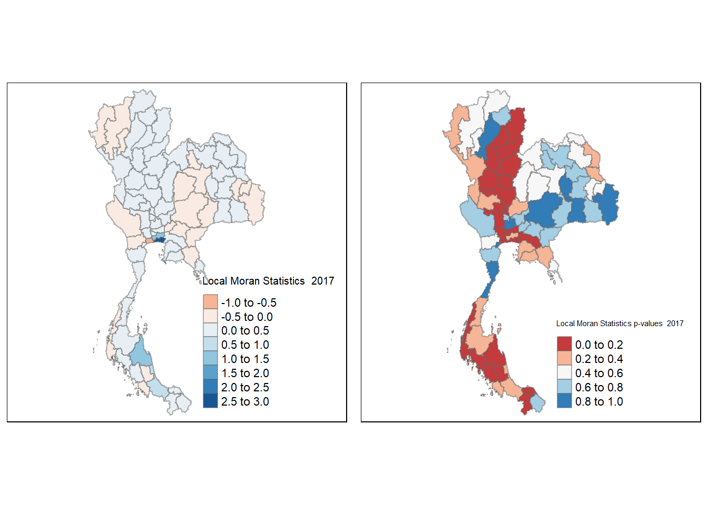
Variable(s) "ii" contains positive and negative values, so midpoint is set to 0. Set midpoint = NA to show the full spectrum of the color palette.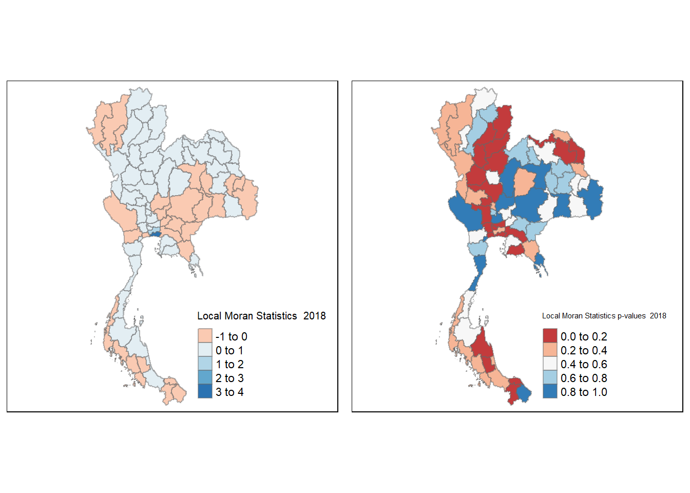
Variable(s) "ii" contains positive and negative values, so midpoint is set to 0. Set midpoint = NA to show the full spectrum of the color palette.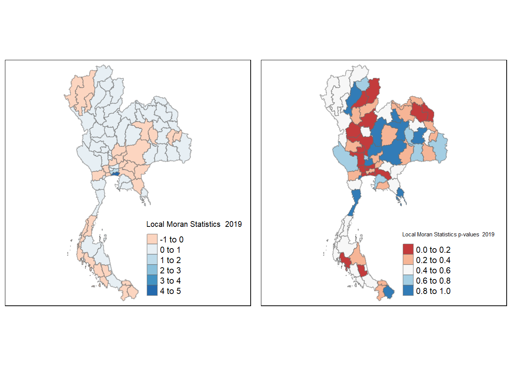
Variable(s) "ii" contains positive and negative values, so midpoint is set to 0. Set midpoint = NA to show the full spectrum of the color palette.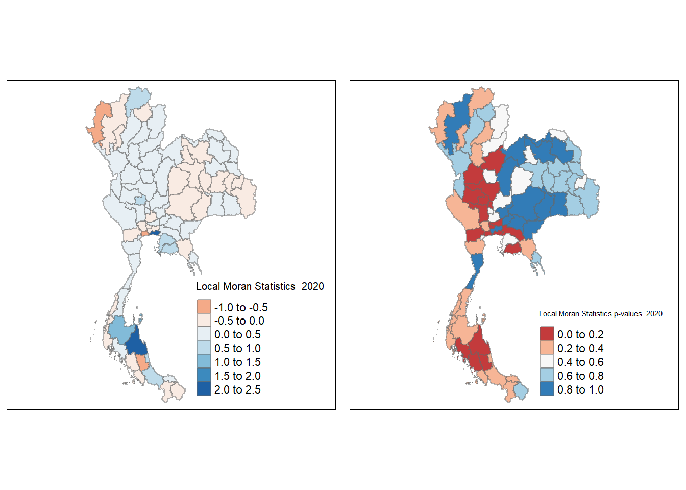
Variable(s) "ii" contains positive and negative values, so midpoint is set to 0. Set midpoint = NA to show the full spectrum of the color palette.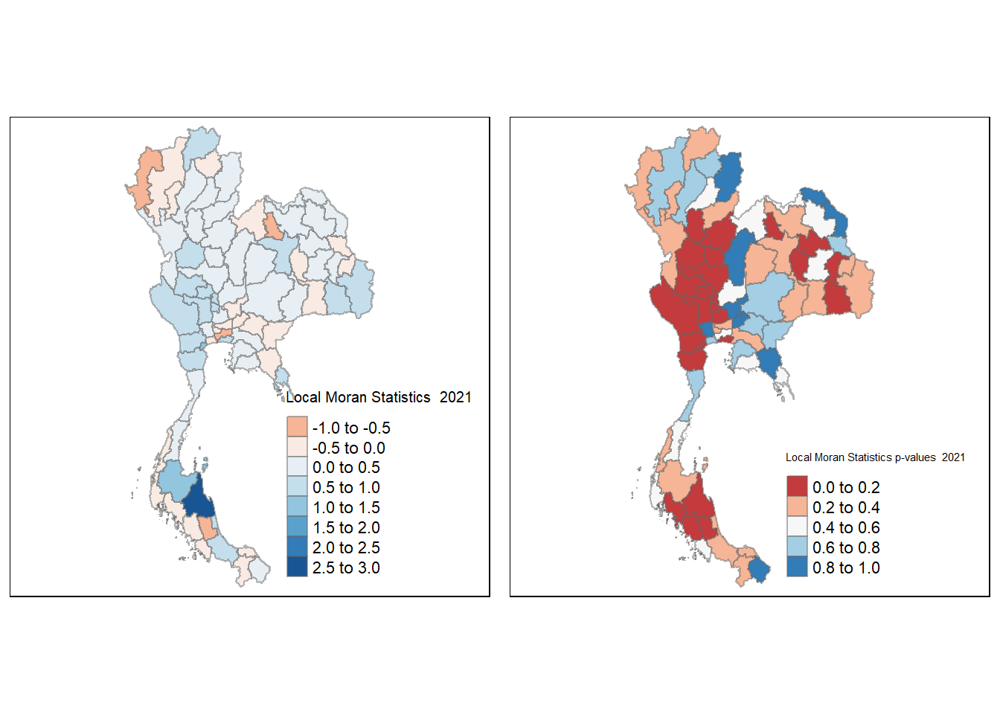
Variable(s) "ii" contains positive and negative values, so midpoint is set to 0. Set midpoint = NA to show the full spectrum of the color palette.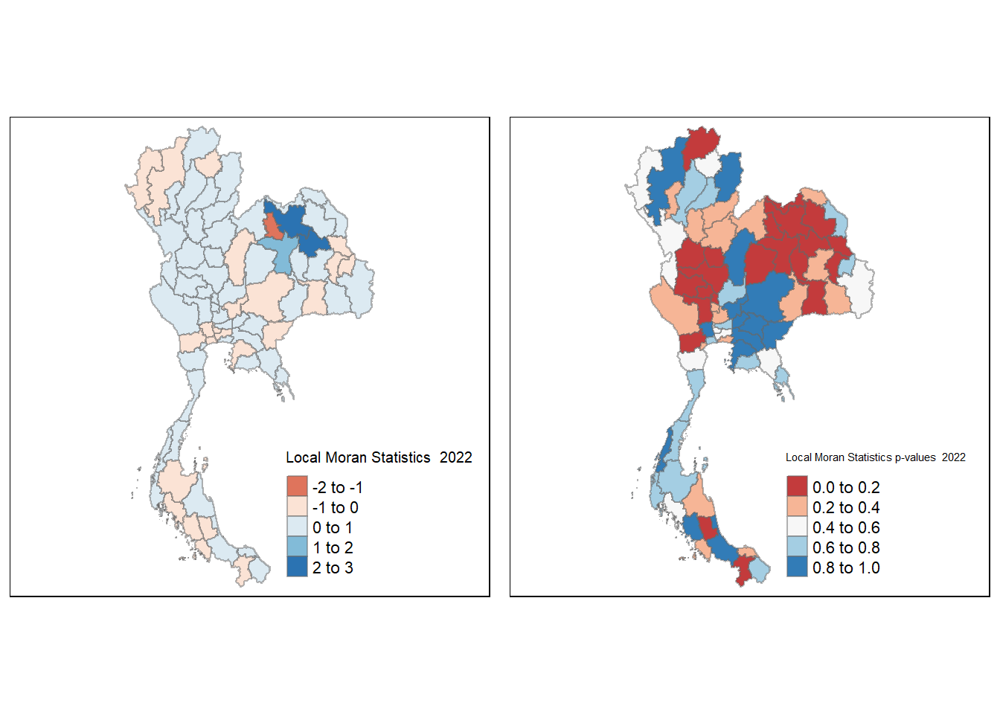
Focusing on the maps without p-values From the graphs, the colours can tell us which province may be outliers and which provinces tend to be spatial clusters. Those areas that are coloured blue tend to range 0.0 to 5. This suggests that these provinces tend to be spatial clusters which are similar values compared to neighbouring province. On the other hand, those province that are coloured Dark Orange and Light Orange usually ranges from -2 to 0. This suggests that these province tend to be an outlier which have dissimilar values compared to neighbouring province.
Across the years, we can observed that province that are coloured orange became blue. The number of province coloured blue significantly increased in the year 2021, indicating that there is an increase in provinces that are spatial clusters with similar values of drug abuse when compared to their neighbouring province.
One thing that stood out was the province coloured dark orange among the blue provinces in the year 2022. With the only province coloured in dark orange, it indicates that this province is definitely an outlier.
Overall, we can see that the concentration of drug abuse cases are in the South, North West provinces as well as the central provinces.
Focusing on the maps with p-values Across the years, there are many provinces that have a statistically significant spatial autocorrelation. An example is that in the year 2022, there are province coloured dark blue in the map on the left with indicates spatial clusters where the neigbouring provinces have similar values. In the map on the right, the same provinces are coloured daek red which indicates statistially significant spatial autocorrelation. The results match and this shows that in these provinces, the spatial clustering is not random. These provinces either have low or high drug abuse cases.
8.0 Creating LISA Cluster Map
LISA - Local Indicator of Spatial Association, provides us an indication of the extent of significant spatial clustering of similar values around the observation. In the analysis, it will calculate a local statistic value, a z-score, a pseudo p-value and a code representing the cluster type. There are two types of clusters: High-High and Low-Low as well as 2 types of outliers: High-Low and Low-High.
High-High: Province with a high value of drug abuse cases, surrounded by neighbouring province with high values of drug abuse cases. High-Low: Province with a high value of drug abuse cases, surrounded by neighbouring province with low values of drug abuse cases. Low-High: Province with a low value of drug abuse cases, surrounded by neighbouring rrovince with high values of drug abuse cases. Low-Low: Province with a low value of drug abuse cases, surrounded by neighbouring province with low values of drug abuse cases.
8.1 Plotting LISA map
As seen from all the maps in Section 7.2, across the years, not all province exhibit statistically significant Local Moran’s I value. I will filter them out since I want to focus on province that with statistically significant Local Moran’s I value. I also created the LISA quadrants in order to plot the map.
quadrant_list <- list()
for (year in names(yearly_data)) {
data_for_year <- yearly_data[[year]]
quadrant_list[[year]] <- vector(length = nrow(data_for_year))
yearly_data[[year]]$lag_total_cases <- st_lag(rswm_q_list[[year]]$total_cases, rswm_q_list[[year]]$nb, rswm_q_list[[year]]$wt)
DV <- yearly_data[[year]]$lag_total_cases - mean(yearly_data[[year]]$lag_total_cases)
LM_I <- local_moran_list[[year]][,1]
signif <- 0.05
quadrant_list[[year]][DV<0 & LM_I>0] <- "LOW - LOW"
quadrant_list[[year]][DV>0 & LM_I<0] <- "LOW - HIGH"
quadrant_list[[year]][DV<0 & LM_I<0] <- "HIGH - LOW"
quadrant_list[[year]][DV>0 & LM_I>0] <- "HIGH - HIGH"
quadrant_list[[year]][local_moran_list[[year]][,5]>signif] <- "Insignificant"
yearly_data[[year]]$quadrant <- quadrant_list[[year]]
}lisa_significant <- list()
for (year in names(yearly_data)){
year_data <- lisa_list[[year]]
significant_data <- yearly_data[[year]] %>% filter(p_ii<0.05)
lisa_significant[[year]] <- significant_data
}for (year in names(yearly_data)) {
data_for_year <- yearly_data[[year]]
map1 <- tm_shape(data_for_year) +
tm_polygons() +
tm_borders(alpha=0.5)+
tm_shape(lisa_significant[[year]]) +
tm_fill("quadrant")+
tm_borders(alpha=0.5)
map2 <- tm_shape(data_for_year) + tm_polygons("total_cases", palette="Blues", style="quantile", n=10)
maps<-tmap_arrange(map1, map2, asp=1, ncol=2)
print(maps)
}Warning: One tm layer group has duplicated layer types, which are omitted. To
draw multiple layers of the same type, use multiple layer groups (i.e. specify
tm_shape prior to each of them).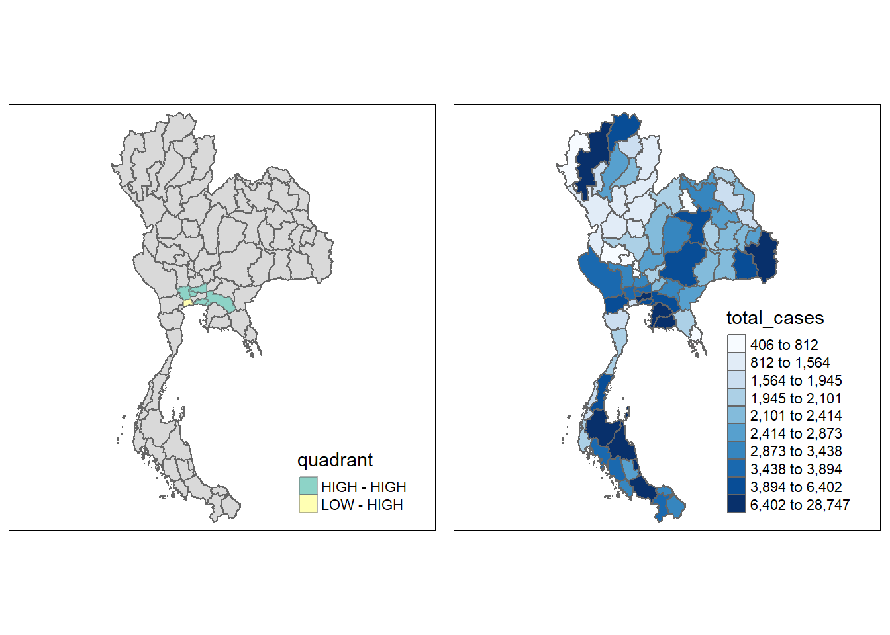
Warning: One tm layer group has duplicated layer types, which are omitted. To
draw multiple layers of the same type, use multiple layer groups (i.e. specify
tm_shape prior to each of them).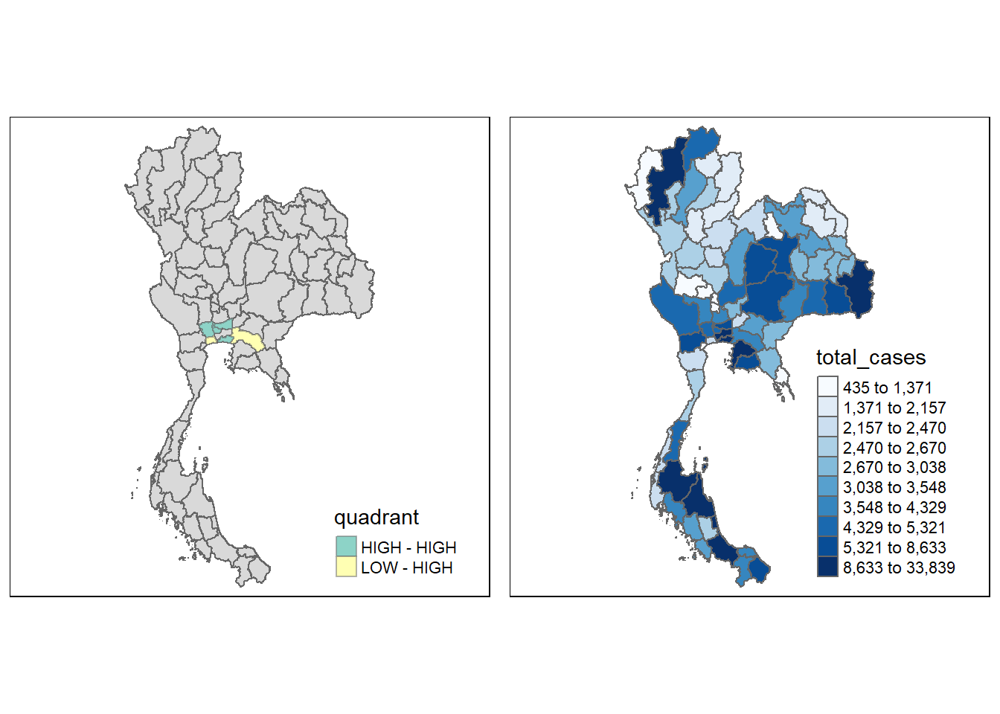
Warning: One tm layer group has duplicated layer types, which are omitted. To
draw multiple layers of the same type, use multiple layer groups (i.e. specify
tm_shape prior to each of them).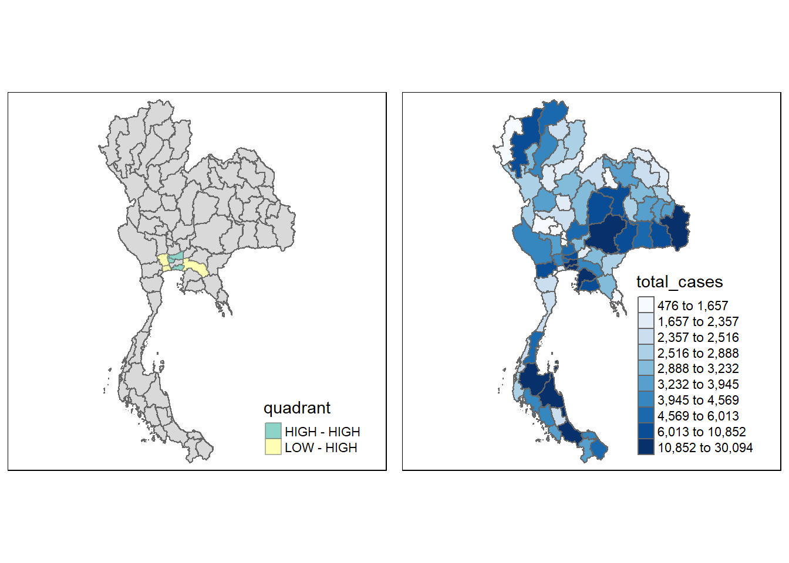
Warning: One tm layer group has duplicated layer types, which are omitted. To
draw multiple layers of the same type, use multiple layer groups (i.e. specify
tm_shape prior to each of them).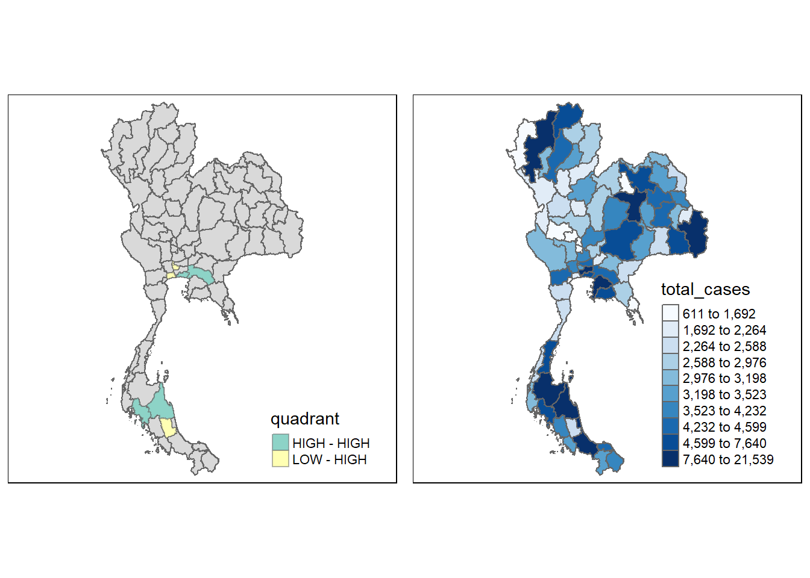
Warning: One tm layer group has duplicated layer types, which are omitted. To
draw multiple layers of the same type, use multiple layer groups (i.e. specify
tm_shape prior to each of them).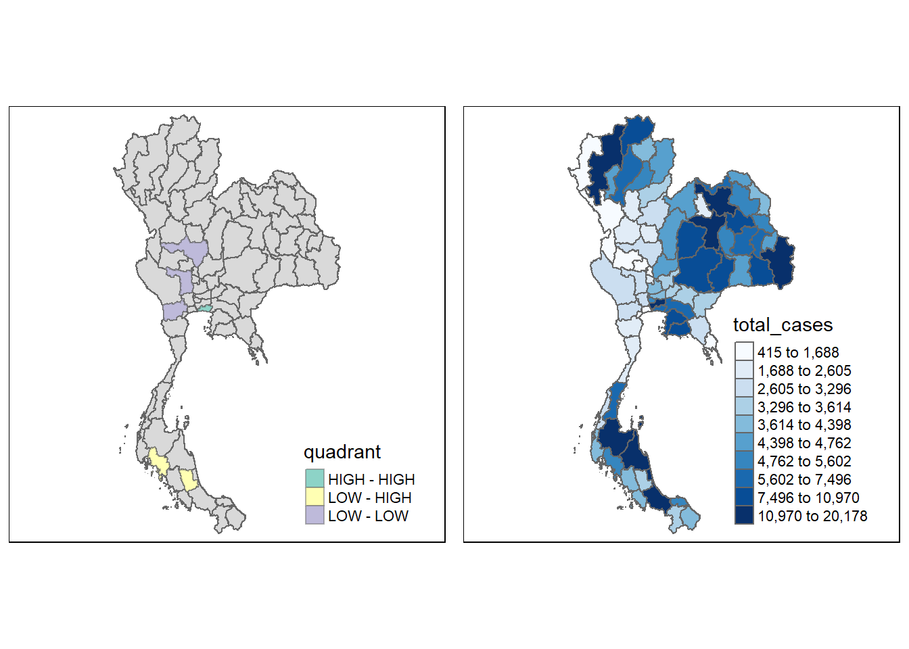
Warning: One tm layer group has duplicated layer types, which are omitted. To
draw multiple layers of the same type, use multiple layer groups (i.e. specify
tm_shape prior to each of them).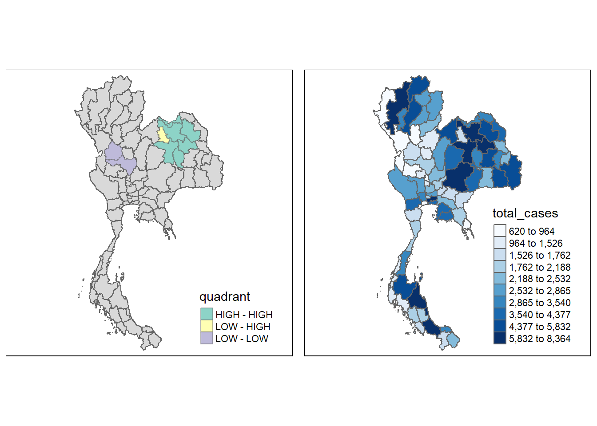
From the graphs above, we can identify the province that has statistically significant spatial autocorrelation with its neighbouring provinces.
In 2017, although there are quite a number of province with high drug abuse cases (DARK BLUE) as seen from the right graph, the province with HIGH HIGH drug abuse clusters are only in the central bottom region.
2018 and 2019 has not much difference but we can see that the number of province with high drug abuse cases are increasing. In 2020, the south provinces in Thailand has an increase in drug abuse cases where the province are coloured dark blue.2 of the province with high drug abuse cases are also part of the HIGH HIGH drug abuse clusters.
In 2022, provinces in the north east of Thailand has extremely high number of drug abuse cases where they belong to the HIGH HIGH cluster. Many of them are coloured in dark blue. However, one region stood out where it is coloured light blue among the province coloured dark blue. This also explains the colouring in the LISA cluster map. The region that is coloured light blue belongs to a LOW HIGH cluster which means that the drug abuse cases in that province is low but is surrounded by neighbouring province with high drug abuse cases.
Another observation that we can make is the LOW LOW clusters. There aren’t any from 2017-2020 and it only appeared in 2019. This could possibly mean that the police in these province may be working together to take actions on drug abuse criminals which led to a decrease in cases and hence, these provinces belong to a LOW LOW cluster.
9.0 Hot spot and Cold Spot Area Analysis
9.1 Getis and Ord’s G statistics
In this section, we will analyse and hot and cold spots. I first derived the centroid of each polygon. I use map_dbl() function and st_centroid() function to get the longitude and latitude values. After getting the objects, I use cbind to put them into the same object. Each year will have one object each.
longitude_list <- list()
for (year in names(yearly_data)) {
data_for_year <- yearly_data[[year]]
longitude_list[[year]] <- map_dbl(data_for_year$geometry, ~st_centroid(.x)[[1]])
}latitude_list <- list()
for (year in names(yearly_data)) {
data_for_year <- yearly_data[[year]]
latitude_list[[year]] <- map_dbl(data_for_year$geometry, ~st_centroid(.x)[[2]])
}coords_list <- list()
for (year in names(yearly_data)) {
data_for_year <- yearly_data[[year]]
coords_list[[year]] <- cbind(longitude_list[[year]], latitude_list[[year]])
}I then determine the upper limit for distance band.
k1dists_list <- list()
for (year in names(yearly_data)) {
data_for_year <- yearly_data[[year]]
k1dists_list[[year]] <- st_nb_dists(coords_list[[year]], rswm_q_list[[year]]$nb)
print(summary(unlist(k1dists_list[[year]])))
} Min. 1st Qu. Median Mean 3rd Qu. Max.
21548 68240 88575 95034 115632 245486
Min. 1st Qu. Median Mean 3rd Qu. Max.
21548 68240 88575 95034 115632 245486
Min. 1st Qu. Median Mean 3rd Qu. Max.
21548 68240 88575 95034 115632 245486
Min. 1st Qu. Median Mean 3rd Qu. Max.
21548 68240 88575 95034 115632 245486
Min. 1st Qu. Median Mean 3rd Qu. Max.
21548 68240 88575 95034 115632 245486
Min. 1st Qu. Median Mean 3rd Qu. Max.
21548 68240 88575 95034 115632 245486 As shown from the summary report above, the largest first nearest neighbour distance is 245486km. So I will be using this as the upper threshold which gives the certainty that all units all have at least one neighbour.
Since I will be testing with fixed and adaptive distance weight matrix, I first get the distance neighbour and weights.
wm_fd_nb_list <- list()
wm_fd_wt_list <- list()
wm_ad_nb_list <- list()
wm_ad_wt_list <- list()
for (year in names(yearly_data)) {
data_for_year <- yearly_data[[year]]
wm_fd.nb <- st_dist_band(coords_list[[year]], lower=0, upper=245486)
wm_fd_nb_list[[year]] <- wm_fd.nb
wm_fd_wt_list[[year]] <- st_inverse_distance(wm_fd.nb, data_for_year$geometry)
wm_ad.nb <- st_knn(coords_list[[year]], k=8)
wm_ad_nb_list[[year]] <- wm_ad.nb
wm_ad_wt_list[[year]] <- st_inverse_distance(wm_ad.nb, data_for_year$geometry)
}! Polygon provided. Using point on surface.
! Polygon provided. Using point on surface.
! Polygon provided. Using point on surface.
! Polygon provided. Using point on surface.
! Polygon provided. Using point on surface.
! Polygon provided. Using point on surface.
! Polygon provided. Using point on surface.
! Polygon provided. Using point on surface.
! Polygon provided. Using point on surface.
! Polygon provided. Using point on surface.
! Polygon provided. Using point on surface.
! Polygon provided. Using point on surface.I plot the graphs side by side for each year in order to make comparison much easier.
for (year in names(yearly_data)) {
data_for_year <- yearly_data[[year]]
wm_fd.nb <- wm_fd_nb_list[[year]]
wm_fd.wt <- wm_fd_wt_list[[year]]
wm_ad.nb <- wm_ad_nb_list[[year]]
wm_ad.wt <- wm_ad_wt_list[[year]]
hcsa <- data_for_year %>% cbind(local_gstar_perm(rswm_q_list[[year]]$total_cases, rswm_q_list[[year]]$nb, rswm_q_list[[year]]$wt, nsim=99)) %>% mutate("p_sim" = replace(`p_sim`, `p_sim` > 0.05, NA),
"gi_star" = ifelse(is.na(`p_sim`), NA, `gi_star`))
hcsa.fd <- data_for_year %>%
cbind(local_gstar_perm(rswm_q_list[[year]]$total_cases, wm_fd.nb, wm_fd.wt, nsim=99)) %>%mutate("p_sim" = replace(`p_sim`, `p_sim` > 0.05, NA),
"gi_star" = ifelse(is.na(`p_sim`), NA, `gi_star`))
hcsa.ad <- data_for_year %>% cbind(local_gstar_perm(rswm_q_list[[year]]$total_cases, wm_ad.nb, wm_ad.wt, nsim=99)) %>% mutate("p_sim" = replace(`p_sim`, `p_sim` > 0.05, NA),
"gi_star" = ifelse(is.na(`p_sim`), NA, `gi_star`))
map1 <- tm_shape(hcsa.fd) + tm_fill("gi_star", title = paste("Gi* fixed ", year)) + tm_borders(alpha=0.5)
map2 <- tm_shape(hcsa.ad) + tm_fill("gi_star", title = paste("Gi* adaptive", year)) + tm_borders(alpha=0.5)
maps <- tmap_arrange(map1, map2, asp = 1, ncol = 2)
print(maps)
}Variable(s) "gi_star" contains positive and negative values, so midpoint is set to 0. Set midpoint = NA to show the full spectrum of the color palette.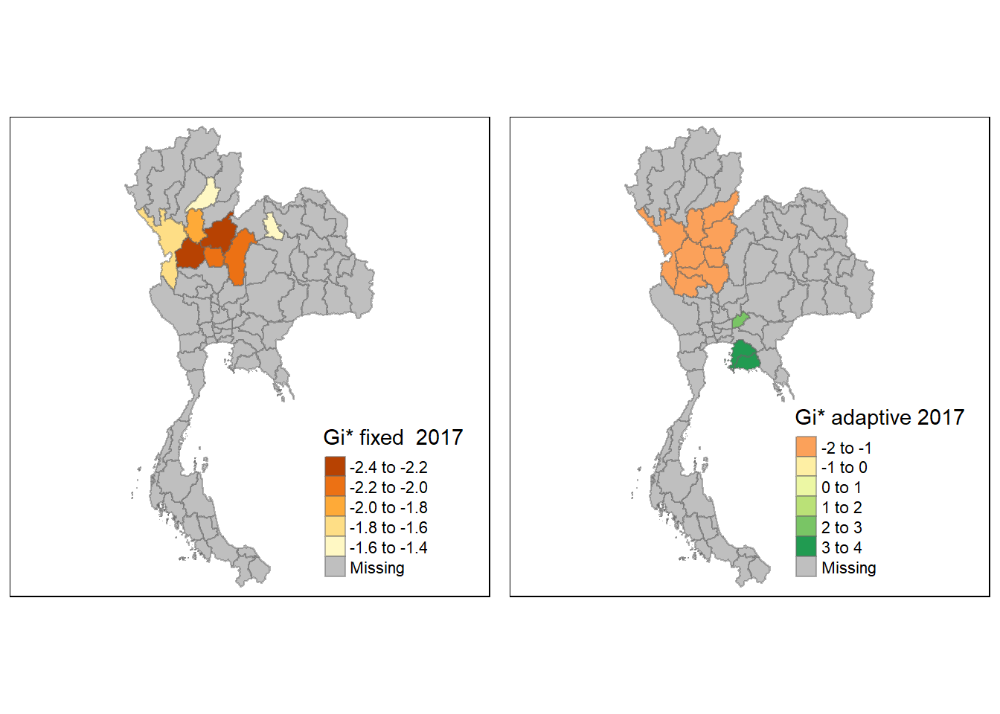
Variable(s) "gi_star" contains positive and negative values, so midpoint is set to 0. Set midpoint = NA to show the full spectrum of the color palette.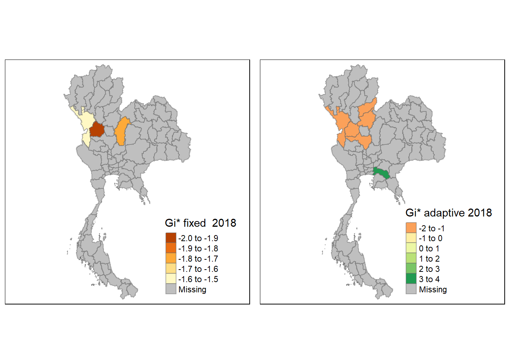
Variable(s) "gi_star" contains positive and negative values, so midpoint is set to 0. Set midpoint = NA to show the full spectrum of the color palette.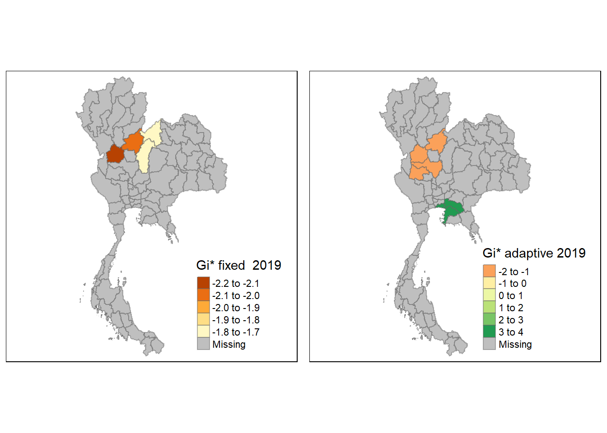
Variable(s) "gi_star" contains positive and negative values, so midpoint is set to 0. Set midpoint = NA to show the full spectrum of the color palette.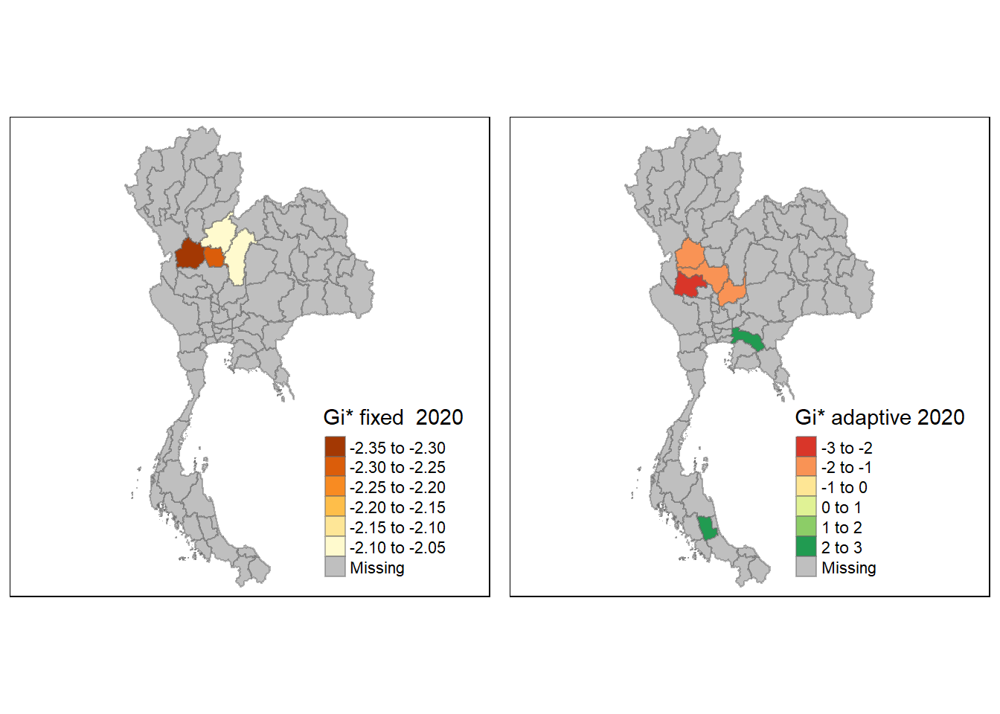
Variable(s) "gi_star" contains positive and negative values, so midpoint is set to 0. Set midpoint = NA to show the full spectrum of the color palette.
Variable(s) "gi_star" contains positive and negative values, so midpoint is set to 0. Set midpoint = NA to show the full spectrum of the color palette.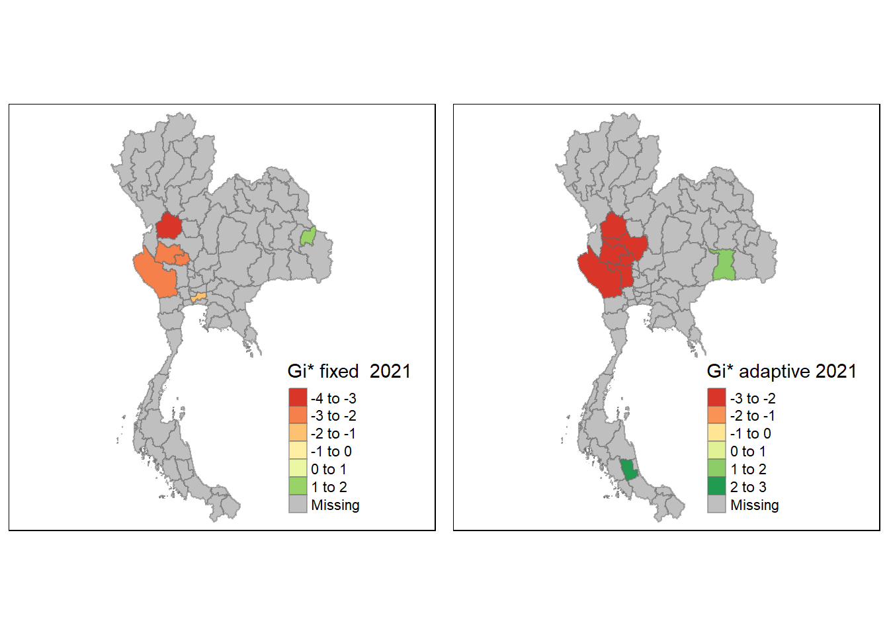
Variable(s) "gi_star" contains positive and negative values, so midpoint is set to 0. Set midpoint = NA to show the full spectrum of the color palette.
Variable(s) "gi_star" contains positive and negative values, so midpoint is set to 0. Set midpoint = NA to show the full spectrum of the color palette.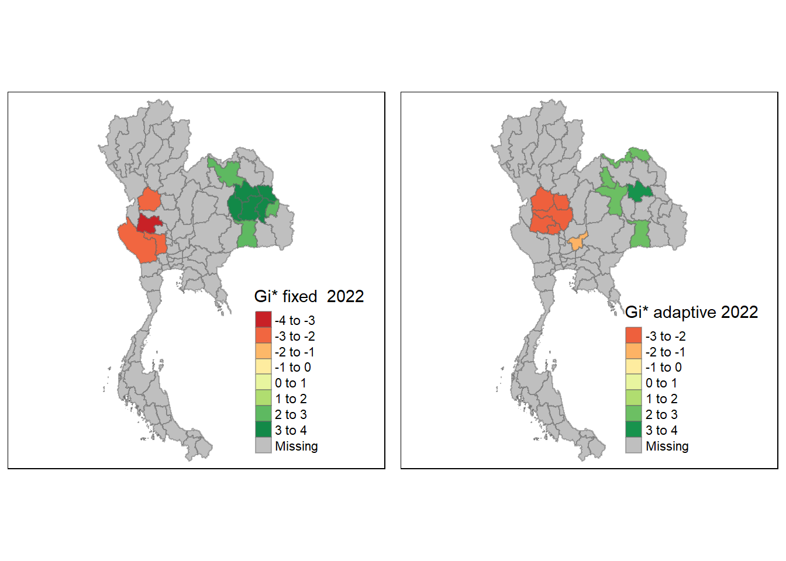
Most of the maps are quite similar in terms of highlighted areas but there are still a few province that were picked out under adaptive distances but not fixed distances. An example is for the year 2017, for the adaptive distances, it has identified the bottom central region to be a cold spot while the fixed distances did not identify it. Another example is in 2018, the central bottom provinces are still identified as a cold spot for adaptive distances but it was not coloured out in fixed distances. On the other hand, for the year 2022, a cold spot was identified in the fixed distances map in the east of Thailand while it was not identified as one in the adaptive distances.
10.0 Conclusion
In conclusion, through the analysis performed, I have found out more about the provinces that formed clusters of drug abuse cases as well as those province who have low drug cases but are surrounded by provinces with high drug cases. I have also learnt more about the trend of drug abuse cases in Thailand across the year 2017-2022. It definitely has been a very interesting assignment. I feel that the results found in this analysis could be very beneficial for the Thailand government as they will be able to find out which parts of Thailand have high drug abuse cases and can potentially pull in more resources to stop the drug abuse cases from growing and prevent large province clusters with high drug cases from increasing.